Multimodalitas dan Interaksi Real-Time¶
Bab-bab sebelumnya mengeksplorasi bagaimana Agents beroperasi di dunia berbasis teks, berinteraksi dengan sistem digital melalui konteks, alat, dan kode. Namun, dunia Agent melampaui teks dan API. Saat Agent perlu memahami perintah lisan, menemukan dan mengklik tombol yang tepat di layar, atau mengarahkan lengan robot untuk memegang suatu objek, ia memasuki wilayah baru: interaksi real-time multimodal. Peralihan dari input dan output murni teks ke persepsi multimodal dan respons real-time ini adalah langkah krusial yang membawa Agent melampaui "kotak dialog." "Multimodal" secara sederhana berarti menangani berbagai bentuk informasi sekaligus—teks, ucapan, gambar, video, dan tindakan—daripada hanya teks saja.
Pertama, mari kita tentukan ruang lingkup bab ini. Pemahaman gambar statis dan dokumen—memeriksa tangkapan layar, membaca bagan, atau mem-parsing PDF—telah menjadi bagian alami dari alur kerja Agent di bab-bab sebelumnya. Untuk LLM multimodal saat ini, tugas-tugas pemahaman input-tunggal ini relatif matang dan tidak memerlukan arsitektur khusus. Bab ini mengatasi kelas masalah yang berbeda: tiga skenario di mana batasan real-time membuat masalah multimodal menjadi sulit—dialog suara, operasi GUI, dan kontrol robot. Dalam pengaturan ini, input tiba terus-menerus dan output harus memenuhi anggaran waktu yang ketat, yang secara fundamental mengubah arsitektur. Pemahaman real-time dari aliran visual kontinu, atau video, tetap menjadi masalah terbuka bagi Agents pada saat penulisan. Kita akan kembali membahasnya ketika bagian Computer Use menguji batas tangkapan layar frame-by-frame, dan sekali lagi dalam pertanyaan akhir bab. Satu batasan lagi: dalam kerangka buku ini, pembuatan multimodal (pembuatan gambar atau video) hanyalah panggilan alat biasa (tool call), sebagaimana dibahas di Bab 5 tentang Pembuatan Multimedia. Agent menggunakannya sebagai alat eksternal, sehingga tidak menimbulkan tantangan interaksi real-time yang dibahas di sini dan tetap berada di luar benang merah bab ini.
Interaksi suara, Computer Use, dan operasi robot mungkin tampak seperti tiga bidang yang sama sekali berbeda, tetapi sistem pada ketiganya menghadapi masalah yang sangat mirip: mereka harus memproses beberapa modalitas sekaligus, dan mereka sangat sensitif terhadap latensi. Jeda lebih dari dua detik dalam percakapan suara membuat orang gelisah; jitter tingkat milidetik dalam kontrol robot dapat menyebabkan tabrakan. Bersama-sama, batasan-batasan ini mendorong ketiga skenario ke arah arsitektur yang sama: menjauh dari pipeline serial (serial pipeline) (seperti jalur perakitan pabrik, di mana satu langkah harus selesai sebelum langkah berikutnya dimulai) dan menuju model end-to-end (model terpadu yang berjalan langsung dari input ke output, menghilangkan penyerahan perantara).
Bab ini diuraikan sebagai berikut:
- Pertama, kita menggunakan tiga paradigma arsitektur suara sebagai kerangka kerja: cascaded (pipeline VAD-ASR-LLM-TTS), omnimodal end-to-end (Omni, model tunggal yang masih mengandalkan pengambilan giliran / turn-taking), dan full-duplex (Moshi dan GPT-Live, yang mendengarkan dan berbicara secara bersamaan). Kita membandingkan latensi dan trade-off mereka dengan menanyakan seberapa jauh setiap paradigma bergerak melampaui asumsi VAD tentang giliran diskrit. Bagian cascaded juga membahas penggantian VAD + ASR dengan persepsi suara streaming.
- Selanjutnya, kita memeriksa bagaimana arsitektur pemikiran (thinking architecture) merekonsiliasi konflik antara "respons real-time" dan "pemikiran mendalam" (deep thinking): dari paralelisasi sederhana cepat dan lambat, hingga pendekatan terpisah di mana model penalaran latar belakang bertindak sebagai "ahli strategi" (delegasi GPT-Live, Pine AI, dll.), hingga "internalisasi" pemikiran Step-Audio R1 ke dalam satu model tunggal yang "berpikir sambil berbicara."
- Kemudian, kita membahas bagaimana sintesis ucapan yang lebih mirip manusia mengoptimalkan lapisan eksekusi.
- Terakhir, kita memperluas perspektif ke Computer Use (memungkinkan AI untuk mengoperasikan layar komputer layaknya manusia) dan operasi robot, mengamati bagaimana masalah latensi dan multimodalitas yang sama bermanifestasi dalam dua skenario ini.
Dua tema teoretis lainnya berlanjut di seluruh skenario ini dan patut mendapat perhatian khusus: arsitektur pemikiran (bagaimana pemikiran cepat dan lambat berkolaborasi) dan antarmuka cepat-lambat (fast-slow interface) yang mengikutinya (Latent Bridge—apa yang dapat dipertukarkan model cepat dan lambat selain teks). Meskipun diperkenalkan dalam konteks suara, ide-ide ini tidak terbatas padanya. Bagian Computer Use dan robotika menghadapi pertanyaan yang sama tentang kapan harus berkonsultasi dengan ahli strategi yang lambat, jadi ingatlah kedua tema ini.
Suara: Antarmuka Manusia-Mesin yang Paling Alami¶
Sebelum membedah arsitektur Agent suara, mundur selangkah dan pertimbangkan nilai suara itu sendiri. Dari semua cara manusia berinteraksi dengan komputer, suara memiliki bandwidth tertinggi dan terasa paling alami: ucapan normal berjalan sekitar empat kali lebih cepat daripada mengetik, dan tidak menyita tangan maupun mata. Itulah sebabnya suara lulus dari metode input sekunder menjadi antarmuka utama untuk pekerjaan sehari-hari banyak orang—berbicara kepada Agent sepanjang hari daripada mengetik kata demi kata.
Pada tingkat alat (tool level), jalur ini telah menghasilkan kira-kira dua jenis produk. Salah satunya adalah alat dikte suara (misalnya, Typeless): mereka mentranskripsi ucapan menjadi teks secara real-time dan memasukkannya ke dalam aplikasi apa pun—pada dasarnya pengganti keyboard. Yang lainnya adalah Agent suara (misalnya, Pine, ChatGPT Voice), di mana pengguna berbicara dan bekerja langsung dengannya: suara adalah input sekaligus interaksi itu sendiri. Penggunaan lanjutan yang paling menonjol dari keduanya adalah whisper coding yang disebutkan dalam pendahuluan—mengarahkan Agent pengkodean atau riset dengan berbicara: pengembang menyatakan niat, mendiskusikannya dengan Agent, dan Agent menjalankan pengkodean serta eksperimen. Lebih dari selusin makalah dari tim penulis buku ini diselesaikan dengan cara ini.
Satu catatan sebelum kita mulai: arsitektur suara yang dibahas di bawah ini melayani kedua arah—pengguna berbicara kepada Agent (suara sebagai antarmuka manusia-mesin), dan Agent berbicara ke dunia luar atas nama pengguna (katakanlah, melakukan panggilan telepon untuk bernegosiasi). Di balik keduanya terdapat teknologi suara real-time yang sama. Kita mulai dengan tiga paradigma arsitektur suara.
Tiga Paradigma Arsitektur Suara¶
Kerangka kerja yang berguna untuk memahami evolusi teknis Agent suara adalah klasifikasi tiga bagian yang disajikan OpenAI saat merilis GPT-Live pada tahun 20261. Ini juga sesuai dengan tiga generasi arsitektur di mana ChatGPT Voice itu sendiri telah berevolusi:
- Cascaded: Merangkai tiga model—Automatic Speech Recognition (ASR), Large Language Model (LLM), dan Text-to-Speech (TTS)—ke dalam sebuah pipeline (pipeline), mengoper tongkat estafet dari satu model ke model berikutnya. ChatGPT Voice paling awal seperti ini. Ini memungkinkan orang untuk "berbicara" dengan frontier model untuk pertama kalinya, tetapi informasi hilang selama transfer antar model, dan responsnya lambat serta kaku.
- Omnimodal End-to-End (Omni): Menggunakan satu model untuk secara langsung "mendengarkan audio, memikirkan balasan, dan mengucapkannya," menggabungkan ketiga tahap menjadi satu. Ini menghasilkan latensi yang lebih rendah dan melestarikan informasi non-tekstual seperti prosodi dan emosi. Namun, ini masih mengasumsikan "pengambilan giliran" (turn-taking)—model menunggu pengguna berhenti sejenak sebelum berbicara, dan peralihan giliran bergantung pada deteksi keheningan. Jeda sedikit atau kebisingan latar belakang dapat disalahartikan sebagai "selesai berbicara," menyebabkan model menyela secara tidak tepat. Mode Suara Lanjutan ChatGPT (Advanced Voice Mode) termasuk dalam generasi ini; OpenAI menyebutnya "model suara berbasis giliran" (turn-based voice models), sementara industri lebih umum menyebutnya berdasarkan kemampuannya sebagai model "Omni" (misalnya, Qwen3-Omni). Kedua nama merujuk pada hal yang sama.
- Full-Duplex / Interaktif: Model mendengarkan dan berbicara secara bersamaan, memproses input dan output secara serentak, membuat keputusan berkali-kali per detik tentang apakah akan "berbicara, mendengarkan, berhenti, menyela, atau memanggil alat," sepenuhnya menghilangkan asumsi "pengambilan giliran." Moshi dari Kyutai pada tahun 2024 adalah pionir penelitian, dan GPT-Live OpenAI pada tahun 2026 membawanya ke skala 150 juta pengguna.
Satu benang merah mengalir melalui ketiga generasi: bagaimana membebaskan diri dari asumsi "bergantian mengambil giliran" (taking turns)—dari membiarkan VAD (Voice Activity Detection) menebak di mana giliran dimulai dan diakhiri. Arsitektur Cascaded dan Omni keduanya masih bersandar pada VAD untuk menentukan batas giliran; hanya full-duplex yang melarutkan gagasan tentang giliran sepenuhnya. Tiga bagian berikutnya mengikuti sumbu ini. Ketiga paradigma ini bukan sekadar pendekatan yang lebih baru menggantikan yang lebih lama; mereka adalah pilihan desain di bawah batasan latensi dan biaya yang berbeda, hidup berdampingan dalam sistem produksi pada tahun 2026.
Lebih jauh lagi, GPT-Live memperkenalkan perubahan struktural kedua—memisahkan "interaksi real-time" dari "pemikiran mendalam" (deep thinking): saat menghadapi masalah yang memerlukan pencarian atau penalaran kompleks, model interaksi mendelegasikan tugas ke frontier model latar belakang (GPT-5.5 saat peluncuran) sambil melanjutkan percakapan dengan sendirinya. Benang merah "pembagian kerja cepat-lambat" ini akan dieksplorasi secara rinci di bagian selanjutnya "Trade-off dalam Arsitektur Pemikiran."
Paradigma 1: Cascaded Pipeline (Pipeline Berjenjang)¶
Sebagian besar asisten suara komersial—dari speaker pintar hingga robot layanan pelanggan—didasarkan pada pipeline serial (Gambar 9-1): Voice Activity Detection (VAD) menentukan kapan pengguna selesai berbicara → Automatic Speech Recognition (ASR) mengubah audio menjadi teks → Large Language Model (LLM) memahami maksud dan menghasilkan balasan → Text-to-Speech (TTS) menyuarakan balasan. Seperti lomba lari estafet, setiap tahap harus menunggu tahap sebelumnya selesai sebelum dapat dimulai.
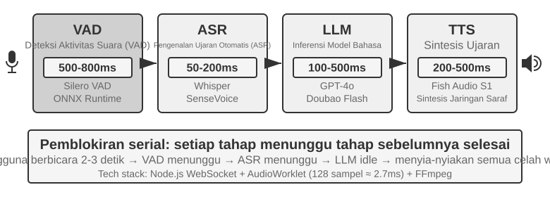
Asisten suara awal mengadopsi pipeline serial empat tahap ini karena alasan sederhana: tidak ada satu model pun yang dapat menangani pengenalan ucapan, pemahaman bahasa, pemikiran, dan sintesis ucapan secara bersamaan. Arsitektur modular memungkinkan setiap komponen dikembangkan dan dioptimalkan secara independen. Namun, biaya dari modularitas adalah latensi yang terakumulasi—setiap tahap harus menunggu tahap sebelumnya selesai sebelum dapat dimulai.
VAD berada di awal pipeline dan terus memantau aliran audio. Pilihan desain utamanya adalah deteksi akhir percakapan (end-of-speech): sistem biasanya menggunakan ambang batas keheningan terus-menerus (continuous silence threshold) sebesar 500-800ms. Jika pengguna berhenti berbicara selama lebih dari setengah detik, VAD menganggap ucapan tersebut selesai. Ini memperkenalkan sumber latensi pertama dan memaksa trade-off yang sulit: jika ambang batas terlalu pendek, jeda untuk berpikir mungkin disalahartikan sebagai akhir dari ucapan, memotong kalimat menjadi pendek; jika terlalu lama, pengguna harus menunggu hampir sedetik setelah selesai sebelum menerima respons.
ASR mengubah bentuk gelombang audio menjadi teks. Model seperti Whisper dan SenseVoice, ketika mentranskripsi 5 detik audio dengan model berukuran kecil hingga menengah yang digunakan (deployed) pada GPU, biasanya membutuhkan 50-200ms; model yang lebih besar atau deployment dengan sumber daya terbatas dapat memakan waktu 200-500ms (kelompok kontrol pada Eksperimen 9-3 termasuk dalam kategori terakhir). Masalah yang lebih kritis: selama waktu tunggu VAD dan transkripsi ASR, LLM di hilir diam sepenuhnya—ia tidak menerima apa pun dan tidak dapat mulai berpikir lebih awal.
Inferensi LLM, bahkan jika dioptimalkan dengan baik, sering kali memiliki Time to First Token (TTFT) sekitar 100-500ms tergantung pada panjang konteks; mendekode segmen pendek pertama yang cocok untuk diucapkan membutuhkan waktu tambahan. Saat penalaran diaktifkan, model biasanya menyelesaikan penalaran internalnya sebelum mengeluarkan token pertama yang terlihat, yang mana dapat memperpanjang waktu tunggu menjadi 5-10 detik. Implementasi serial penuh secara tradisional juga menunggu LLM untuk menyelesaikan balasan secara menyeluruh sebelum menyerahkan teks ke TTS.
TTS mengubah teks balasan menjadi ucapan; mensintesis segmen pendek biasanya memakan waktu 200-500ms. Gambar 9-2 menggunakan balasan singkat dengan penalaran dinonaktifkan untuk mengilustrasikan bagaimana latensi serial terakumulasi: VAD (500-800ms) + ASR (50-200ms) + LLM TTFT (100-500ms) + pembuatan LLM untuk segmen pendek (100-300ms) + TTS (200-500ms), dengan total sekitar 0,95-2,3 detik. Ini hanyalah rentang ilustratif di bawah konvensi pengukuran yang konsisten; latensi aktual juga bergantung pada panjang input dan balasan, model, perangkat keras, jaringan, dan beban (load).
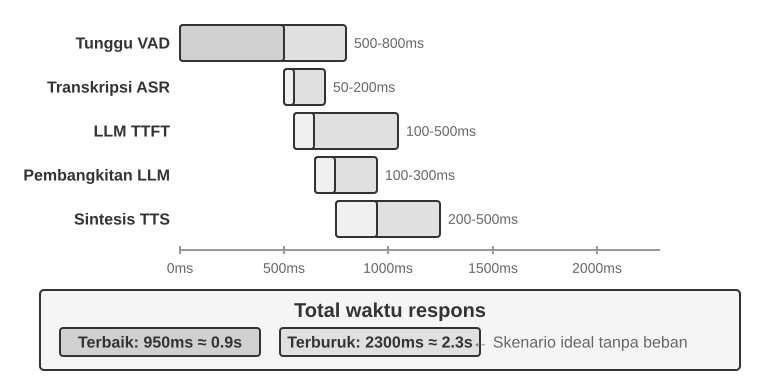
Setelah berada di tahap produksi, latensi antrean memperburuk keadaan. Ini bekerja seperti restoran: semakin sibuk dapurnya, semakin lama waktu tunggunya—dan waktu tunggu tidak bertambah secara linear, melainkan meroket (Gambar 9-3). Ketika permintaan tiba tanpa ada antrean di depannya, waktu pemrosesannya adalah tanpa antrean (no-queue), atau latensi diam (idle latency). Tetapi ketika beberapa permintaan tiba secara bersamaan, yang datang belakangan harus mengantre.
Secara intuitif, semakin tinggi utilisasi (pemanfaatan), semakin tajam—dan tidak linear—waktu tunggu meningkat. Teori antrean memberikan perkiraan hubungan (sebagai intuisi di sini; tidak diperlukan penurunan yang ketat): Total Latensi ≈ Latensi Idle × 1/(1-Utilisasi). Utilisasi mengacu pada proporsi waktu saat server sibuk; misalnya, utilisasi 50% berarti server sedang memproses permintaan separuh waktu dan diam pada separuh waktu. Pada utilisasi 50%, latensi berlipat ganda; pada 80%, itu adalah lima kali latensi idle—itulah sebabnya server tidak dapat berjalan di bawah beban tinggi untuk waktu yang lama.
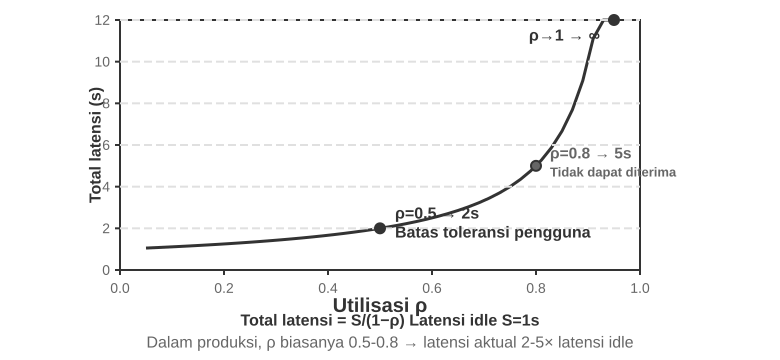
Eksperimen 9-1 ★: Membangun Agent Suara Tradisional
Eksperimen ini membangun sistem dialog suara real-time yang lengkap, memungkinkan pengguna untuk berinteraksi dengan AI melalui suara lewat mikrofon. Sistem ini menggunakan arsitektur pemisahan front-end/back-end dengan komunikasi real-time melalui WebSocket.
Proses intinya mengikuti pola serial yang ketat: front-end menangkap input mikrofon dan mengirimkannya ke back-end secara real-time via WebSocket. Back-end menjalankan model Silero VAD untuk deteksi aktivitas suara, yang menawarkan akurasi lebih tinggi dan ketahanan kebisingan yang lebih baik dibandingkan dengan metode deteksi berbasis volume tradisional. Setelah mendeteksi sekitar 500ms keheningan terus-menerus, segmen audio diekstraksi untuk pemrosesan selanjutnya.
Tahap ASR, LLM, dan TTS masing-masing mendukung peralihan fleksibel antara beberapa penyedia (providers), memungkinkan pengembang untuk memilih kombinasi optimal berdasarkan latensi, akurasi, dan kondisi jaringan regional.
Eksperimen 9-2 ★: Membangun Phone Agent Menggunakan PineClaw Voice API
Eksperimen 9-1 membangun sistem dialog suara di dalam browser, tetapi banyak tugas Agent di dunia nyata yang memerlukan panggilan telepon aktual—menghubungi layanan pelanggan untuk menegosiasikan tagihan, memesan restoran, mengonfirmasi pesanan. Bab 4 mendemonstrasikan, melalui mekanisme Channel PineClaw, bagaimana arsitektur berbasis peristiwa (event-driven architecture) dapat mengurangi latensi respons untuk notifikasi telepon dari hitungan menit menjadi detik. Eksperimen ini berfokus pada membangun panggilan suara itu sendiri. Mengambil PineClaw Voice API (dikembangkan oleh tim penulis) sebagai contoh, telephony voice API tingkat produksi semacam itu biasanya merangkum seluruh proses pemanggilan (dialing), navigasi IVR (yaitu, menu telepon "Untuk pertanyaan, tekan 1; untuk operator, tekan 0"), percakapan, dan transkripsi: Agent memberikan nomor telepon, tujuan, dan informasi konteks, kemudian Agent suara menyelesaikan keseluruhan panggilan, mengembalikan rekaman panggilan terstruktur.
Tujuan Eksperimen: Membangun Agent yang mampu menyelesaikan tugas melalui panggilan telepon yang sesungguhnya, mengintegrasikan PineClaw Voice sebagai alat ke dalam loop ReAct.
Pendekatan Teknis: Menggunakan PineClaw Voice Python SDK (
pine-voice) untuk melengkapi Agent dengan alatmake_phone_call. Agent menerima deskripsi tugas dari pengguna (misalnya, "Bantu saya memesan pemeriksaan gigi besok jam 3 sore") dan, dengan menggunakan penalaran ReAct, menentukan: (1) nomor telepon mana yang akan dihubungi; (2) tujuan dan informasi utama untuk panggilan tersebut; dan (3) bagaimana melaporkan hasilnya kepada pengguna setelah panggilan berakhir.Alur kerja Agent: Pengguna mengatakan "Hubungi klinik untuk membuat janji temu besok" → Agent memikirkan informasi apa yang dibutuhkan (nomor telepon klinik, waktu janji temu, nama pasien) → Jika informasinya tidak cukup, Agent meminta klarifikasi kepada pengguna → Memanggil alat
make_phone_call→ PineClaw memutar nomornya, bercakap-cakap dengan pihak lain, dan menyelesaikan pemesanan → Agent menerima ringkasan panggilan dan transkrip → Melaporkan hasil ke pengguna.Kriteria Penerimaan (Acceptance Criteria): Berhasil melakukan panggilan uji coba (dapat mencoba menelepon ponsel Anda sendiri terlebih dahulu untuk memverifikasi konektivitas). Agent dapat secara otonom menentukan parameter panggilan berdasarkan deskripsi tugas. Setelah panggilan berakhir, ia mengekstraksi informasi utama dengan benar (waktu janji temu, nomor konfirmasi, dll.) dan melaporkannya kepada pengguna. Bandingkan perbedaan antara menggunakan API secara langsung dan memanggilnya melalui loop ReAct Agent—yang terakhir dapat menangani situasi dengan informasi yang tidak lengkap (misalnya, mencari nomor telepon jika pengguna tidak memberikannya).
Eksperimen ini menunjukkan arah aplikasi penting untuk Agent suara: Agents tidak hanya dapat melakukan percakapan suara dengan pengguna tetapi juga berinteraksi dengan dunia luar melalui panggilan telepon atas nama pengguna. Agent suara PineClaw secara khusus dilatih untuk menangani waktu tunggu berjam-jam, navigasi menu telepon, dan negosiasi yang kompleks—bayangkan meminta AI menelepon saluran layanan pelanggan operator Anda dan menunggu operator manusia. Ini justru skenario di mana pipeline suara serial tradisional kesulitan.
Streaming Rantai-Penuh (Full-Chain) pada Cascaded Pipeline¶
Gambar 9-2 mengasumsikan skenario serial sepenuhnya (fully serial) di mana setiap tahap selesai sebelum menyerahkan tongkat estafet. Sistem produksi biasanya mempertahankan pembagian modular VAD-ASR-LLM-TTS sambil membuat setiap tahap memancarkan hasil bertahap sedini mungkin, mempersingkat waktu hingga pengguna mendengar suku kata pertama:
- ASR mentranskripsi sambil mendengarkan: Pengenalan streaming (streaming recognition) terus-menerus memancarkan transkrip sementara ketika pengguna berbicara, menyembunyikan sebagian besar komputasi pengenalan di balik ucapan pengguna. Teks final tetap harus dikonfirmasi setelah giliran berakhir karena konteks selanjutnya dapat merevisi transkrip sementara.
- LLM melakukan streaming output dan menyegmentasi teks: Saat model menghasilkan respons, ia memecah balasan menjadi potongan-potongan siap ucap (speech-ready chunks) berdasarkan tanda baca atau semantik dan mengirimkan potongan pertama ke TTS tanpa menunggu balasan secara lengkap. Ini tidak mempersingkat TTFT pada LLM atau melewati penalaran (reasoning); ini menghilangkan waktu tunggu hingga sisa respons selesai.
- TTS mensintesis audio secara bertahap: TTS dimulai saat menerima potongan teks pertama dan mengembalikan potongan audio sebelum bentuk gelombang secara lengkap siap. LLM kemudian dapat menghasilkan sisa teks sementara TTS mensintesis ucapan selanjutnya dan klien memutar audio yang telah diterimanya.
Namun, membuat setiap tahap menjadi streaming tidak berarti ketiga model mulai bekerja secara bersamaan pada giliran yang sama. Dalam cascaded non-spekulatif standar, dependensi tetap ada: ASR dapat bekerja saat pengguna sedang berbicara; LLM menghasilkan balasan final hanya setelah giliran berakhir dan transkrip stabil; TTS dimulai hanya setelah LLM memancarkan potongan siap ucap yang pertama. Tumpang tindih aktualnya ada antara ucapan pengguna dan transkripsi ASR, serta antara pembentukan sisa balasan LLM dan sintesis/pemutaran TTS—bukan paralelisme penuh di antara ASR, LLM, dan TTS dari awal hingga akhir.
Sistem yang lebih agresif menggunakan pembuatan preemptive/spekulatif: mereka memulai LLM dari transkrip parsial yang cukup stabil, kemudian membatalkan, memulai ulang, atau mengoreksi pembuatannya jika transkripsi nantinya berubah. Mereka juga dapat menyintesis ucapan lebih awal, tetapi biasanya menunggu konfirmasi giliran sebelum memutar agar Agent tidak berbicara menimpa pengguna yang belum selesai. Framework seperti LiveKit Agents dan Pipecat dapat mendukung cascaded streaming biasa dan strategi preemptive ini. Apakah ASR dan LLM benar-benar tumpang tindih tergantung pada implementasi secara eksplisit atas melakukan commit pada transkrip parsial, pembatalan (invalidation), dan rollback; ini bukanlah konsekuensi otomatis dari mengaktifkan opsi stream.
Streaming biasa juga tidak dapat menghilangkan waktu tunggu keheningan pada VAD dan penilaian giliran itu sendiri. ASR streaming sudah berjalan selama waktu tunggu tersebut; apa yang diblokir oleh deteksi giliran adalah menetapkan (committing) transkrip akhir dan memutar balasan. Pembuatan preemptive dapat menyembunyikan sebagian komputasi ini, tetapi sistem masih harus memutuskan kapan waktu yang aman untuk berbicara. Mengurangi penundaan tersebut lebih jauh memerlukan peningkatan persepsi front-end dan keputusan endpoint (titik akhir) itu sendiri.
Streaming Voice Perception: Menggantikan VAD + ASR¶
Perception front-end ini terdiri dari dua tahap: VAD menentukan apakah pengguna telah selesai berbicara, dan ASR mentranskripsi audio menjadi teks. Dalam arsitektur serial sepenuhnya, keduanya bersama-sama menentukan kapan pipeline hilir (downstream pipeline) dimulai dan input apa yang diterimanya. Dalam arsitektur streaming, ASR dimulai lebih awal, tetapi mengonfirmasi teks akhir dan memutuskan kapan harus membalas tetap dibatasi oleh endpoint detection. Cascade VAD + ASR tradisional memiliki tiga masalah mendasar:
- Latency Accumulation: VAD harus menunggu 500–800ms keheningan untuk mengonfirmasi pengguna telah selesai, karena ia tidak dapat memprediksi masa depan dan hanya bisa mengandalkan "menunggu" untuk membedakan antara "benar-benar selesai" dan "hanya jeda untuk berpikir."
- Information Loss: VAD hanya mengeluarkan sinyal biner seperti "suara/hening." Semua detail akustik—perubahan emosi, pergeseran nada, jeda keraguan, dan suasana latar belakang—hilang. Kesalahan sangat umum terjadi di lingkungan yang kompleks: jeda yang sedikit lebih lama mungkin disalahartikan sebagai akhir dari ucapan, sehingga memotong kalimat; kebisingan latar belakang dapat memicu false start, yang menyebabkan sistem memproses audio saat tidak ada yang berbicara; dan sistem mungkin tidak dapat membedakan apakah ucapan "uh-huh" dari pengguna merupakan interupsi atau sekadar tanda persetujuan.
- Decreased Accuracy: VAD memotong audio kontinu menjadi segmen-segmen independen, yang masing-masing dikirim ke ASR untuk dikenali, sehingga mengganggu kesinambungan konteks. Kesalahan pengenalan (recognition errors) meningkat secara signifikan untuk konten yang membutuhkan konteks, seperti alamat email, nama merek, nama orang, dan kata benda khusus (proper nouns) lainnya. Sebagai contoh, jika pengguna mengatakan "john dot smith at gmail dot com" dan "john" serta "smith" dipotong menjadi segmen berbeda, "smith" mungkin disalahartikan sebagai "miss" karena kurangnya konteks.
Streaming voice perception models menawarkan perbaikan yang mendasar. Pertama, mari kita pastikan apa arti "streaming" secara teknis: apakah model suara dapat melakukan streaming bergantung pada apakah encoder is causal or chunked (hanya mengandalkan audio yang sudah tiba, tidak pernah membutuhkan keseluruhan rekaman) dan apakah decoding is incremental (mengeluarkan hasil parsial saat setiap potongan kecil audio masuk). Whisper tidak dapat melakukan streaming—bukan karena decoding-nya, yang memang bersifat autoregressive, tetapi karena encoder-nya membutuhkan segmen audio yang lengkap (berdurasi tetap 30 detik, diisi (padded) jika lebih pendek) sebelum ia dapat dimulai. Perhatikan juga bahwa streaming recognition itu sendiri bukanlah hal baru: streaming ASR tradisional, yang diwakili oleh RNN-T dan streaming Conformer, telah lama diterapkan dalam skala besar di industri—live captions pada ponsel dan voice typing di aplikasi keyboard menggunakan model seperti itu—dan sama sekali tidak ada hubungannya dengan LLMs.
Bagian ini berfokus pada jalur baru: LLM-based streaming auditory perception—melakukan post-training pada backbone open-source LLM untuk menghasilkan respons semantik langsung dari aliran audio kontinu, sehingga menggabungkan "pengenalan (recognition)" dan "pemahaman (understanding)" dalam sebuah model tunggal. Ini adalah peningkatan (upgrade) dari streaming ASR tradisional, bukan sebuah penemuan teknologi streaming: latensi dari pengenalan inkremental (incremental recognition) tetap berada pada kisaran waktu inferensi satu langkah (puluhan hingga beberapa ratus milidetik), tetapi model tidak lagi melihat fragmen terisolasi yang dipotong oleh VAD. Sebaliknya, model ini melihat aliran audio yang kontinu dari awal percakapan hingga saat ini, yang memungkinkan In-Context Learning berdasarkan konteks lengkap dan secara signifikan meningkatkan akurasi pengenalan untuk informasi pribadi, istilah teknis, dan pola pengucapan individu.
Keuntungan utama lainnya adalah jalur ini mewarisi world knowledge dan kemampuan penalaran (common-sense reasoning) dari LLMs—bagaimanapun juga, backbone model tersebut telah melihat teks dalam jumlah yang sangat besar. Sebagai contoh, model tersebut tahu bahwa "Apple" yang diikuti oleh "event" kemungkinan besar merujuk pada perusahaan, bukan pada buah. Peningkatan pengetahuan ini membuat akurasi pengenalan untuk informasi bernilai tinggi seperti jumlah, nama tempat, dan nama merek jauh melebihi ASR tradisional. Jalur ini sudah memiliki model yang dapat digunakan (deployable models), seperti Ultravox dari Fixie, yang memasukkan audio secara langsung ke dalam backbone LLM dan mengeluarkan teks serta token semantik. Qwen2-Audio yang digunakan dalam eksperimen di bagian ini dan Qwen2.5-Omni dari Alibaba juga termasuk dalam kategori audio-native models ini.
Namun, mengganti VAD tidak selalu mengharuskan penggunaan audio LLM skala penuh. Jika tujuannya hanya untuk memecahkan masalah pertama—menentukan apakah pengguna telah selesai berbicara—ada jalur yang lebih ringan: menanamkan "turn judgment" (penilaian giliran) ini secara langsung ke dalam recognizer itu sendiri2. Pendekatannya: tambahkan LoRA adapter ke streaming-recognition model open-source yang kecil sehingga model tersebut dapat mentranskripsi sekaligus menimbang semantik dan keheningan secara bersama-sama untuk menilai apakah kalimat tersebut telah mengekspresikan pemikiran yang utuh—hal ini diperlukan karena jeda intra-turn (sebuah jeda saat membacakan nomor telepon) sering kali berjalan lebih lama daripada jeda antar-giliran, sehingga mengandalkan ambang batas (threshold) keheningan saja pasti akan gagal di kedua arah. Temuan yang lebih menarik: ketika model terus ragu-ragu tentang apakah akan mengambil giliran tersebut, akar penyebabnya biasanya bukan arsitekturnya melainkan training labels annotated with hindsight—para annotator menggunakan audio yang muncul setelah titik pengambilan keputusan, yang tidak akan pernah bisa dilihat oleh model online tersebut. Anotasi ulang setiap label hanya dengan menggunakan informasi yang tersedia pada momen pengambilan keputusan, dan keraguan palsu tersebut akan hilang. Hal ini menggemakan sebuah penilaian dari Bab 7 mengenai post-training: seringkali, data lebih kritis daripada arsitektur. Jalur yang lebih ringan ini juga memiliki implementasi tingkat produksi (production-grade): Flux dari Deepgram dan Universal-Streaming dari AssemblyAI yang menanamkan endpointing dan turn detection secara langsung ke dalam streaming recognition models, yang dirancang khusus untuk voice Agents; di sisi open-source, LiveKit dan Pipecat menyediakan semantic turn detection models.
Model tersebut menghasilkan tidak hanya teks tetapi juga serangkaian penanda khusus untuk kejadian akustik (special markers for acoustic events)—ini adalah token-token khusus yang diperkenalkan selama pelatihan model. Model ini belajar untuk secara otomatis mengeluarkannya ketika mendeteksi kejadian akustik yang sesuai. Jenis-jenis yang umum meliputi:
<speak_start/end>: Menandai awal dan akhir ujaran berdasarkan penilaian komprehensif atas semantik dan akustik, alih-alih sekadar deteksi keheningan sederhana.<interrupt>: Membedakan apakah pengguna benar-benar ingin menyela (interrupt) atau sekadar mengakui atau terpengaruh oleh kebisingan latar belakang.<emotion:happy/frustrated>: Penanda emosi.<laugh>/<sigh>: Sinyal paralinguistik seperti tawa dan helaan napas.<music>/<noise>: Suara lingkungan.
Penanda-penanda ini, bersama dengan token teks, membentuk aliran kejadian (event stream) terpadu yang dimasukkan ke dalam thinking layer.
Input audio: "Um, actually I think... no wait, let me reconsider."
Model output stream:
<speak_start> Um, <emotion:hesitant> actually I think...
<silence:500ms> no wait, <emotion:confident> let me reconsider <speak_end>
Perhatikan bahwa model tersebut menghasilkan bukan hanya transkripsi teks tetapi juga penanda kejadian suara (awal/akhir ujaran, perubahan emosi, interval keheningan). Agent frameworks dapat memanfaatkan penanda ini untuk interaksi yang lebih alami—sebagai contoh, menawarkan opsi secara proaktif ketika mendeteksi keraguan pengguna.
Eksperimen 9-3 ★: Mensimulasikan Streaming Voice Perception dengan Qwen2-Audio
Pertama, sebuah peringatan tentang desain eksperimen ini: Qwen2-Audio itu sendiri adalah model non-streaming yang mengambil keseluruhan segmen sebagai input. Eksperimen ini menggunakan input berpotongan (chunked input) untuk mensimulasikan pemrosesan streaming—memotong aliran audio kontinu menjadi potongan-potongan kecil dengan panjang tetap dan mengirimkan masing-masing potongan ke model bersama dengan konteks audio yang terakumulasi. Model ini secara bertahap menghasilkan teks dan token kejadian akustik (seperti tawa, jeda, dan sinyal non-verbal lainnya), sementara eksperimen ini mengukur latensi dari penyerahan setiap potongan hingga penerimaan teks. Pendekatan ini memiliki biaya yang penting: encoder dari Qwen2-Audio tidak bersifat inkremental. Setiap kali model memproses potongan baru, ia harus melakukan re-encode (menyandikan ulang) semua audio yang terkumpul sebelumnya dari awal. Seiring berkembangnya percakapan, latensi encoding untuk setiap potongan juga meningkat. Ini adalah perbedaan mendasar antara "streaming yang disimulasikan" dan "streaming sejati", yang menggunakan encoder inkremental atau kausal (causal encoders) untuk memproses hanya audio yang baru saja tiba. Desain ini mendemonstrasikan manfaat akurasi dari persepsi yang kontinu dengan konteks lengkap, tetapi angka latensinya hanya mencerminkan ukuran potongan (chunk size) dan kecepatan inferensi, bukan first-packet latency dari model yang dirancang untuk streaming sejati, seperti Qwen3-Omni dengan chunked encoding. Pembaca yang tertarik dapat mengulangi eksperimen ini dengan model semacam itu. Baseline-nya adalah pipeline VAD + Whisper ASR tradisional. Eksperimen ini mencakup tiga skenario: percakapan normal, kalimat panjang dengan jeda, dan percakapan dengan kebisingan latar belakang.
Hasil: Latensi pengenalan inkremental (incremental recognition latency) dari skema simulasi berbasis potongan ini dapat dikendalikan pada kisaran satu hingga dua ratus milidetik (tergantung pada panjang potongan dan hardware), sementara skema tradisional mengharuskan kita menunggu VAD untuk mengonfirmasi penyelesaian (600ms) ditambah inferensi Whisper (sekitar 200–500ms di bawah konfigurasi eksperimen ini), dengan total 800–1100ms. Dalam skenario yang memiliki jeda, VAD salah menilai jeda panjang pertama sebagai akhir ucapan, sehingga memotong kalimat menjadi dua segmen untuk pengenalan terpisah. "大概两点左右" ("sekitar jam dua") salah dikenali sebagai "大概零点左右" ("sekitar tengah malam")—karena dihilangkan dari konteks di sekitarnya, suara 两 (liǎng, "dua") yang terdengar mirip disalahartikan sebagai 零 (líng, "nol"). Skema potongan, yang mempertahankan konteks lengkap, dengan benar mengenali seluruh kalimat tersebut. Pada skenario kebisingan latar belakang, Qwen2-Audio mengeluarkan token
<|noise|>untuk menandai adanya kebisingan tanpa menginterupsi pengenalan, sementara VAD tradisional terpicu secara salah oleh kebisingan, menyebabkan proses pengenalan dimulai secara prematur.
Paradigma 2: End-to-End Omnimodal Models (Omni)¶
Melihat kembali pada cascaded pipeline secara keseluruhan: bahkan dengan perception front-end miliknya yang telah di-upgrade ke streaming voice perception, ia tetap membagi tugas mendengarkan (listening), berpikir (thinking), dan berbicara (speaking) ke tiga model independen yang dihubungkan oleh antarmuka (interface) terpisah. Seberapa pun lebar antarmuka tersebut berkembang, ia hanya membawa segelintir token semantik dan sesekali penanda akustik; emosi pembicara, nada, intonasi, dan suara lingkungan atau musik sebagian besar hilang dalam serah terima (handover). Dan karena ketiga segmen tersebut dilatih dan di-tune secara terpisah, mereka kesulitan untuk bekerja sebagai satu kesatuan. End-to-end omnimodal models (Omni) mengambil jalur yang berbeda—sebuah model tunggal secara langsung "mendengarkan" audio, "memikirkan" balasan, dan "mengucapkannya", menggabungkan ketiga segmen tersebut menjadi satu (Gambar 9-4). Dengan training data yang cukup, ruang laten internal model (internal latent space) dapat membawa sinyal-sinyal paralinguistik ini lurus hingga ke sisi pembuatan (generation side), sehingga mengurangi latensi sambil mempertahankan prosodi dan emosi dengan cara yang tidak dapat dilakukan oleh teks saja. Trade-off-nya adalah: cascaded pipelines memiliki modul yang bersih, per-segment tuning, dan interpretabilitas yang baik; end-to-end models membeli latensi yang lebih rendah dan non-textual fidelity dengan mengorbankan tuntutan data pelatihan yang lebih berat serta interpretabilitas yang lebih buruk.
Satu dimensi secara rutin diabaikan: keuntungan utama dari end-to-end models adalah latensi; mereka belum tentu menang dalam hal akurasi. Perbandingan yang instruktif adalah self-cascade—model yang sama pertama-tama mentranskripsi audio ke dalam teks terstruktur, kemudian menalar atas teks tersebut. Apakah self-cascade atau sebuah pass tunggal end-to-end lebih akurat tergantung pada tugasnya, dan polanya jelas: ketika jawaban ditentukan terutama oleh konten semantik ("apa yang dikatakan") dan teks perantara dapat membawa informasi yang relevan dengan tugas, self-cascade menyamai atau mengalahkan end-to-end—terutama untuk model dengan persepsi yang lebih lemah. Ketika jawabannya bergantung pada isyarat non-verbal yang sulit direpresentasikan oleh teks (nada, emosi, suara lingkungan), end-to-end jelas lebih unggul. Lebih penting lagi, pihak mana yang menang dapat diprediksi sebelumnya dari sifat tugas tersebut, daripada sekadar menganggap bahwa "end-to-end lebih canggih." Sebuah prinsip desain pun mengikuti: apa yang menentukan kinerja (performance) biasanya bukanlah apakah sebuah representasi perantara—sebuah bottleneck—itu ada, tetapi informasi apa yang dibawa oleh bottleneck tersebut. Tingkatkan (upgrade) teks perantara dari sekadar transkripsi telanjang menjadi representasi terstruktur dengan penanda paralinguistik (emosi, kecepatan bicara, suara lingkungan), dan keuntungan akurasi dari end-to-end models sering kali menyempit. Ini adalah klaim yang sama yang dibuat sebelumnya di "Streaming Voice Perception": layer persepsi tidak seharusnya hanya mengeluarkan plain text (teks biasa) saja3.
Seberapa pun kuatnya Omni nantinya, ia hanyalah menggabungkan tiga model menjadi satu, tanpa membuang asumsi tentang "taking turns" (mengambil giliran): ia tetap mengandalkan VAD untuk mengalokasikan giliran bicara—langsung terdiam begitu ia mendeteksi pengguna berbicara, dan mulai kembali saat pengguna terdiam. Sehingga, kegagalan yang tidak asing lagi pun muncul kembali: pengguna membacakan serangkaian angka, berhenti sejenak, dan Omni memutuskan bahwa mereka sudah selesai lalu langsung menyela (cuts in). Streaming voice perception yang dijelaskan sebelumnya mengangkat penilaian giliran (turn judgment) dari sekadar durasi keheningan menuju tingkat semantik dan secara signifikan mengurangi kesalahan semacam itu—tetapi hal itu tetaplah merupakan penambalan lokal (local patch) di dalam kerangka kerja turn-taking, bukan akhir dari turn-taking itu sendiri. Untuk melepaskan diri selamanya (for good), seseorang harus berhenti memberikan solusi sementara (patch) di dalam kerangka kerja: biarkan model mendengarkan dan berbicara secara bersamaan serta memutuskan sendiri kapan harus berbicara, tanpa adanya peralihan kaku (hard switch) perihal "giliran siapa sekarang."
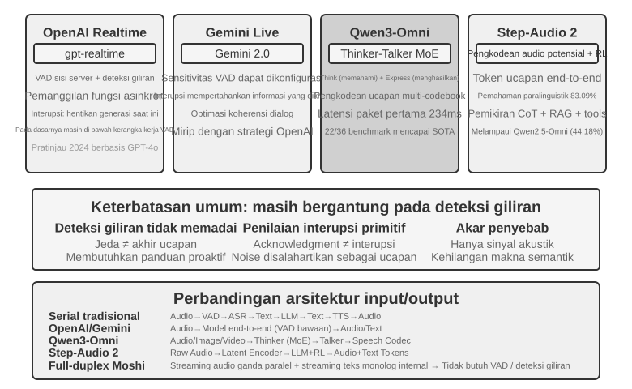
Pada tingkat model, OpenAI Realtime API mendekati sistem end-to-end karena model memproses audio secara native. Akan tetapi, pada tingkat kontrol interaksi (interaction-control level), ia masih mengandalkan VAD tradisional, menjadikannya sebuah langkah perantara menuju sistem end-to-end sepenuhnya. Pratinjau (preview) tahun 2024 pada awalnya dijalankan pada GPT-4o; ketika API ini tersedia secara umum di tahun 2025, ia beralih ke gpt-realtime, model khusus yang dioptimalkan untuk suara real-time alih-alih mode dari GPT-4o. API ini mengaktifkan server-side VAD secara default dan secara otomatis menentukan kapan pengguna mulai dan berhenti berbicara. Ia juga mendukung interupsi: ketika pengguna mulai berbicara, API segera menghentikan generasi suara (voice generation) saat ini, sama seperti orang yang secara alami terdiam ketika disela dalam percakapan tatap muka. gpt-realtime juga memperkenalkan asynchronous function calls (panggilan fungsi asinkron), yang memungkinkan model untuk terus berbicara sambil menunggu hasil alat (Tool Use) dan dengan demikian menyembunyikan tool latency di dalam percakapan. Peningkatan ini menyempurnakan pengalaman yang ada tetapi tetap merupakan optimasi di dalam kerangka kerja VAD. Gemini Live API mengambil pendekatan serupa, menawarkan sensitivitas VAD yang dapat dikonfigurasi dan mempertahankan informasi yang sudah dikirim setelah interupsi untuk menjaga koherensi percakapan.
Qwen3-Omni mengadopsi arsitektur Thinker-Talker: memisahkan pemikiran (pemahaman dan penalaran) dari ekspresi (generasi suara) ke dalam dua modul khusus, menyatukan persepsi dan generasi untuk teks, gambar, audio, dan video.
Untuk mempertahankan kapabilitas yang tinggi sekaligus mengendalikan biaya komputasi, Qwen3-Omni mengadopsi arsitektur MoE (Mixture of Experts)—bayangkan seperti "memanggil tim pakar sesuai permintaan": ia berisi beberapa jaringan pakar (expert networks) kecil secara internal, dan untuk setiap inferensi, hanya beberapa yang paling relevan dengan tugas saat ini yang diaktifkan, sementara sisanya tidak ikut berpartisipasi dalam komputasi. Sebagai contoh, ketika memproses ucapan, ia utamanya mengaktifkan para pakar yang terkait ucapan (speech-related experts); ketika memproses gambar, ia utamanya mengaktifkan pakar yang terkait visi. Hal ini memungkinkan model tersebut untuk memiliki jumlah parameter total yang sangat besar (memastikan kapabilitas tinggi) sambil menjaga komputasi aktual per token tetap sangat kecil, sehingga meningkatkan throughput inferensi dan mengurangi latensi antrean (queuing latency) di bawah beban yang tinggi.
Satu perbedaan yang patut diluruskan: MoE meningkatkan throughput—berapa banyak permintaan yang dapat dilayani oleh satu unit komputasi. Hal tersebut tidak secara langsung menentukan seberapa cepat paket audio pertama dapat dipancarkan; first-packet latency (latensi paket-pertama) bergantung pada generation architecture. Latensi paket-pertama yang rendah pada Qwen3-Omni berasal dari modul Talker-nya: ia menghasilkan token audio secara inkremental menggunakan multi-codebook autoregression, sementara causal codec secara inkremental men-decode token-token tersebut menjadi bentuk gelombang (waveform). Segera setelah modul pemikiran menghasilkan teks, si Talker dapat mulai melakukan streaming ucapan tanpa harus menunggu respons penuh. Menurut laporan resmi, first-packet latency cold-start teoretisnya adalah sekitar 234ms. Ia mendukung pemahaman dalam 19 bahasa dan generasi dalam 10 bahasa, serta memimpin pada 22 dari 36 benchmark audio-video.
Step-Audio 2 mengambil rute yang berbeda: ia secara langsung memproses input audio mentah (raw audio input) dan mengeluarkan teks serta audio, mencapai percakapan suara end-to-end yang sesungguhnya. Ia tidak hanya dapat memahami apa yang dikatakan (informasi semantik) tetapi juga memahami bagaimana hal tersebut diucapkan—informasi paralinguistik, seperti apakah emosi pembicara sedang gembira atau marah, apakah kecepatan bicaranya cepat atau ragu-ragu, apakah intonasinya naik atau turun—serta suara lingkungan latar belakang dan musik. Ia menghasilkan respons ekspresif melalui pemikiran dan reinforcement learning, dan juga mengintegrasikan mekanisme RAG serta perangkat eksternal (Tool Use) seperti pencarian web, pencarian audio. Menurut makalah Step-Audio 2, pada benchmark StepEval-Audio-Paralinguistic yang mereka usulkan untuk pemahaman paralinguistik, Step-Audio 2 mencapai akurasi sebesar 83,09%, jauh lebih unggul dari open-source omnimodal model sezamannya Qwen2.5-Omni (44,18%), dan juga melampaui GPT-4o Audio (43,45%) dan Kimi-Audio (49,64%).
Step-Audio R1 adalah model penerus dalam seri Step-Audio. Dibangun berdasarkan pada arsitektur percakapan suara end-to-end Step-Audio 2, model ini menginternalisasi lebih lanjut kemampuan pemikiran secara langsung ke dalam model audio tersebut. Keduanya mewakili evolusi progresif di sepanjang jalur teknis yang sama.
Paradigma 3: Full-Duplex / Interactive Models¶
Paradigma 2 menggabungkan tiga model menjadi satu tetapi masih berpegang teguh pada asumsi mengambil giliran (taking turns)—entah pengguna yang berbicara atau model yang berbicara, dengan titik peralihan (switch point) ditebak oleh VAD atau semantik. Beberapa skenario sama sekali tidak memiliki ruang untuk konsep "kalimatmu, lalu kalimatku". Simultaneous interpretation (Penerjemahan simultan) adalah kasus klasik: penerjemah tidak menunggu kalimat selesai sebelum memulai, melainkan mendengarkan dan menyusun kalimat secara sekaligus, menerjemahkan setiap unit makna segera setelah kira-kira utuh—mendengarkan dan menerjemahkan selalu tumpang tindih. Game ritme, di mana Anda memukul ketukan drum selaras dengan musik, bahkan lebih ekstrem lagi: telinga harus mengikuti aliran musik yang tak terputus, tangan harus memukul setiap ketukan pada saat itu juga, dan pikiran harus mengantisipasi ketukan berikutnya—di sini tidak ada yang namanya sebuah "giliran", yang ada hanyalah aliran input tanpa akhir. Tugas-tugas semacam ini menantang model yang berbasis giliran (turn-by-turn model) dari akarnya: mereka menuntut agar mendengarkan, berpikir, dan bertindak terjadi secara bersamaan, sementara seluruh premis dari turn-based model adalah untuk menempatkan ketiganya ke dalam irisan waktu (time slices) yang terpisah. Model full-duplex mengambil jalur "menghapuskan VAD" menuju titik akhir logisnya—ia melepaskan begitu saja asumsi turn-taking tersebut dan membiarkan model mendengar dan berbicara secara terus-menerus, pada waktu yang bersamaan.
Pekerjaan riset pelopor (pioneering research work) di sini adalah Moshi (2024) dari Kyutai. Ia memodelkan dua aliran audio secara paralel (suara pengguna dan suara model itu sendiri), ditambah dengan aliran teks "monolog batin" (inner monologue) untuk meningkatkan kualitas linguistik ucapan yang dihasilkan. Karena ia selalu mendengarkan, ucapan yang saling tumpang tindih (overlapping speech) dan interupsi (interruptions) menjadi perilaku alami, yang tidak memerlukan logika deteksi interupsi secara eksplisit. End-to-end latency berada di kisaran 200ms, mendekati ritme alami percakapan manusia.
Pada tahun 2026, Thinking Machines Lab, yang didirikan oleh Mira Murati, meninjau (previewed) kategori baru yang mereka sebut sebagai Interaction Model4 dan secara eksplisit berargumen bahwa interaktivitas seharusnya tidak menjadi kekang eksternal (external harness) seperti VAD yang dibungkus di sekeliling model, tetapi seharusnya dibangun langsung ke dalam model itu sendiri. Dalam kata-kata mereka, "agar interaktivitas dapat diskalakan dengan kecerdasan, hal itu harus menjadi bagian dari model itu sendiri." Secara arsitektural, hal ini diterjemahkan menjadi micro-turns: alih-alih menunggu seluruh giliran selesai, model ini bekerja dalam segmen-segmen kira-kira 200ms—secara terus-menerus memproses 200ms input dan menghasilkan 200ms output—sehingga memungkinkan aliran audio, video, dan teks saling menyelipkan (interleave) dan maju bersama-sama. Granularitas ini merupakan sebuah kompromi yang disengaja—cukup halus sehingga keheningan, tumpang tindih, dan interupsi dipertahankan sebagai aliran kontinu dalam konteks model, tanpa adanya batasan giliran artifisial (artificial turn boundaries) yang perlu diakomodasi; namun cukup kasar untuk memproses berbagai modalitas (multiple modalities) dalam potongan-potongan (chunks) secara bersamaan, menjaga agar latensi tetap berada dalam kisaran real-time secara perseptual. Karena interaksi hidup di dalam model, perilaku-perilaku yang dahulunya harus dirakit dari kekang yang dikhususkan—mendengarkan sambil berbicara, menonton sambil menyela—sekarang hanyalah bagian dari pekerjaan model tersebut, dan semuanya akan menguat seiring dengan menguatnya si model. Model pertamanya, TML-Interaction-Small, dilatih secara gabungan (jointly) pada ketiga aliran dari awal; ketika ia menyadari pengguna sedang menulis sekeping kode yang penuh dengan bug, atau seseorang melangkah ke dalam bingkai kameranya, ia dapat angkat bicara tanpa diminta.
Pada tahun yang sama, GPT-Live dari OpenAI membawa full-duplex menuju skala produksi (production scale), diluncurkan secara global sebagai voice model default yang baru untuk ChatGPT. Ia tidak lagi memperlakukan percakapan sebagai serangkaian giliran pesan terpisah, melainkan secara terus-menerus memproses input sekaligus secara terus-menerus menghasilkan output. Oleh karena itu, ia dapat membuat banyak keputusan interaksi per detik: apakah harus mulai berbicara, terus mendengarkan, menjeda, menyela, atau memanggil alat (Tool Use). Hasilnya adalah ia menunggu dengan tenang saat pengguna sedang berpikir alih-alih menginterupsi, menggunakan ungkapan persetujuan (acknowledgments) seperti "mm-hmm" dan "benar" untuk menunjukkan bahwa ia sedang mendengarkan, dan juga mampu melakukan tugas-tugas seperti terjemahan real-time yang mengharuskan aktivitas mendengarkan dan berbicara secara bersamaan.
GPT-Live juga mengikuti jalur yang sama dalam memisahkan proses cepat dan lambat—memisahkan (decoupling) "real-time interaction" dari "deep thinking": ketika ia menemui tugas yang membutuhkan pencarian (search), penalaran, atau operasi agent yang lebih kompleks, GPT-Live interaktif mendelegasikan tugas tersebut ke frontier model di latar belakang (pada saat peluncuran, GPT-5.5), sambil terus mempertahankan alur percakapan dengan sendirinya. Setelah background model tersebut menghasilkan sebuah hasil, GPT-Live mengintegrasikannya ke dalam percakapan. GPT-Live-1 dan versi mini-nya menggunakan GPT-5.5 Instant di latar belakang, sementara tingkatan (tiers) Medium dan High memanggil GPT-5.5 dengan kemampuan berpikir (thinking-enabled), yang memungkinkan pengguna untuk memilih antara "cepat" (fast) dan "mendalam" (deep) sesuai dengan kebutuhan. "Pembagian kerja yang cepat-lambat (fast-slow division of labor)" ini persis dengan topik yang akan diperluas pada bagian selanjutnya, "Trade-offs in Thinking Architectures."
Mengkaji ulang alur naratif bab ini tentang "menggantikan VAD": VAD menebak titik peralihan-giliran (turn-switching point) berdasarkan ambang batas keheningan (silence thresholds); streaming perception (lihat bagian "Streaming Voice Perception" sebelumnya di Paradigma 1) meningkatkan (upgrades) penilaian peralihan ke tingkat semantik; dan model full-duplex sepenuhnya membubarkan konsep "beralih (switching)" itu sendiri—ia selalu mendengarkan, sehingga "interupsi" bukan lagi sebuah peristiwa (event) yang memerlukan penanganan khusus, dan rantai pemrosesan barge-in sebagian besar dihilangkan secara arsitektural. Ini adalah titik akhir dari alur narasi "menggantikan VAD" pada saat penulisan.
Trade-off Arsitektur Berpikir: Dari Pemisahan hingga Penyatuan¶
Tantangan yang sesungguhnya adalah ketegangan antara respons real-time dan pemikiran mendalam (deep thinking): pengguna mengharapkan respons di tingkat milidetik, sementara masalah kompleks seringkali membutuhkan waktu berpikir selama beberapa detik. Bagaimana caranya model dapat berpikir cukup dalam namun tetap menjaga latensi yang rendah? Ketegangan (tension) ini tidak unik pada end-to-end architectures; cascaded pipelines juga menghadapinya.
Tiga solusi di bawah ini tidak mewakili suatu perkembangan linier (linear progression). Solusi-solusi tersebut merupakan trade-off desain untuk batasan (constraints) yang berbeda dan hidup berdampingan dalam praktiknya. Pilihan yang tepat bergantung pada persyaratan latensi dari suatu aplikasi serta kedalaman penalaran yang dibutuhkannya. Perbedaan kuncinya adalah ini: Solusi 1 dan 2 membagi pekerjaan di antara dua model independen, satu model yang cepat dan satu model yang lambat, yang berjalan secara bersamaan (concurrently). Keduanya tidak membutuhkan arsitektur end-to-end dan bahkan dapat diletakkan (layered) di atas sebuah cascaded pipeline. Hanya Solusi 3 yang benar-benar menginternalisasi penalaran di dalam end-to-end model.
Menjelang tahun 2026, jalur "fast-slow decoupling" telah menjadi pilihan utama bagi produk-produk suara terdepan (frontier voice products) dan memperoleh sebutannya tersendiri. Thinking Machines Lab menyebutnya "Interaction Models"—sebuah model interaksi real-time yang dipasangkan dengan model penalaran latar belakang (background reasoning model) asinkron; "Think Fast" dari Grok Voice xAI, voice Agent dari Pine AI, dan "delegasi" GPT-Live pada bagian sebelumnya, semuanya mengikuti rute yang sama yaitu "cepat di latar depan untuk mempertahankan percakapan, lambat di latar belakang untuk pemikiran yang mendalam (deep reasoning)." Pilihan untuk memisahkan (decouple) ini daripada sekadar "melatih satu model tunggal yang serba bisa" memiliki alasan yang pragmatis: frontier reasoning models beriterasi setiap beberapa bulan sekali, sementara kemampuan interaksi real-time memerlukan data khusus dan tujuan pelatihan. Memasukkan keduanya ke dalam model yang sama berarti mengejar target yang terus bergerak (moving target) dan berpotensi mencairkan kemampuan penalaran yang paling berharga5. Sebaliknya, dengan menjaga reasoning model terkuat agar tetap utuh di latar belakang dan hanya melatih model interaksi yang ringan untuk layar depan, seseorang akan selalu dapat menggunakan "otak" terkuat saat ini—inilah tepatnya mengapa GPT-Live menekankan pada "pergantian yang berkelanjutan menuju frontier models terbaru (sustainable swapping to the latest frontier models)." Di bawah ini, kita akan memeriksa tiga solusi secara berurutan sesuai dengan mekanisme koordinasinya yang semakin kuat.
Solusi 1: Pemikiran Cepat untuk Pengisi, Pemikiran Lambat untuk Jawaban¶
Berpikir cepat (fast thinking) dan berpikir lambat (slow thinking) berjalan secara paralel (Gambar 9-5): berpikir cepat menghasilkan jawaban penahan singkat (brief holding reply) dalam kurun waktu 500ms (seperti cara orang pada awalnya berkata "biar saya pikirkan dulu"), sementara berpikir lambat menghabiskan waktu 5-10 detik untuk menalar di latar belakang sebelum memberikan jawaban yang lengkap. Teknik di balik slow thinking adalah "test-time scaling"—dalam istilah sederhana, membiarkan model untuk berpikir sedikit lebih lama sebelum menjawab: alih-alih langsung melompat ke sebuah jawaban dalam satu langkah, ia bekerja layaknya seseorang yang sedang mengerjakan soal matematika—membuat sketsa pendekatan, menurunkannya langkah demi langkah, memeriksa kembali hasilnya—menukarkan (trading) lebih banyak komputasi demi sebuah jawaban yang lebih baik.
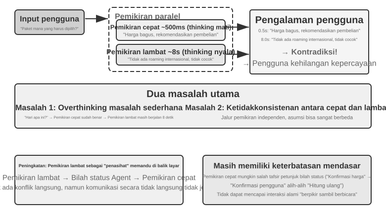
Masalah 1: Memikirkan pertanyaan sederhana secara berlebihan. Pengguna bertanya "Hari apa ini?" Pemikiran cepat dengan benar menjawab "Rabu" dalam waktu 500ms, tetapi pemikiran lambat masih menjalankan pemikiran penuh selama 10 detik dan kemudian mengulangi "Rabu." Ini tidak hanya membuang-buang sumber daya komputasi tetapi, yang lebih kritis, mengganggu ritme percakapan—pengguna sudah memiliki jawaban dan siap untuk melanjutkan, hanya untuk disela oleh respons yang diulang. Masalah 2: Ketidakkonsistenan antara cepat dan lambat. Keduanya berjalan secara independen secara paralel. Mereka melihat konteks yang sama, tetapi jalur penalaran mereka dapat menyimpang sepenuhnya—pemikiran cepat menjawab berdasarkan kekuatan satu asumsi, pemikiran lambat menemukan bahwa asumsi tersebut salah dan mencapai kesimpulan yang berlawanan. Dalam hitungan detik pengguna mendengar sistem bertentangan dengan dirinya sendiri, dan kepercayaan langsung runtuh pada saat itu juga. Akar masalah: Solusi 1 membagi percakapan menjadi dua proses pemikiran independen daripada satu aktivitas kognitif yang koheren, tanpa mekanisme koordinasi antara cepat dan lambat.
<user>Apakah paket ini cocok untuk saya?</user>
<!-- Pemikiran cepat setelah 0,5 detik -->
<assistant (fast thinking)>Paket ini sangat terjangkau, jadi saya sarankan untuk membelinya.</assistant>
<user>Oke, kalau begitu saya akan...</user>
<!-- Pemikiran lambat selesai setelah 8 detik -->
<assistant (slow thinking)>Tunggu, saya menemukan bahwa paket ini tidak memiliki fitur roaming internasional yang Anda butuhkan, jadi mungkin tidak cocok.</assistant>
<user>(Marah) Jadi kamu menyarankan saya membelinya atau tidak?!</user>
Solusi 2: Pemikiran Cepat untuk Interaksi, Pemikiran Lambat untuk Saran¶
Solusi 2 memungkinkan pemikiran lambat melihat output dari pemikiran cepat. Ini memberikan saran melalui Agent Status Bar (mekanisme injeksi meta-informasi dinamis yang diperkenalkan di Bab 2) alih-alih berbicara langsung kepada pengguna. Dibandingkan dengan Solusi 1, pendekatan ini membuat dua peningkatan: pemikiran lambat berjalan secara asinkron di latar belakang dan melanjutkan penalaran selama jeda dalam ucapan; dan karena ia dapat melihat output pemikiran cepat, ia menghindari pertentangan langsung dengannya dan sebaliknya bertindak sebagai "ahli strategi" di balik layar. Delegasi GPT-Live dan Pine AI voice Agent yang disebutkan sebelumnya adalah contoh produksi dari Solusi 2—model penalaran latar belakang mengirimkan kesimpulannya ke model interaksi latar depan melalui saluran teks yang ringkas, dan model latar depan memutuskan kapan dan bagaimana menyajikannya kepada pengguna.
Meskipun demikian, solusi ini masih memiliki batasan mendasar. Pemikiran cepat mungkin tidak mengikuti instruksi—komunikasi antara dua proses penalaran independen tidak langsung dan ambigu. Pemikiran cepat dapat salah membaca pembaruan Agent Status Bar: ia mungkin mengartikan "harga perlu dikonfirmasi ulang" sebagai "tanyakan pengguna apakah harga ini dapat diterima," padahal makna yang dimaksud adalah "harga dihitung secara salah—hitung ulang." Tidak ada visibilitas ke penalaran menengah—pemikiran lambat mungkin menghasilkan kesimpulan menengah yang berharga selama 10 detik penalarannya, tetapi pemikiran cepat tidak melihat satu pun dari mereka; ia hanya dapat menunggu pembaruan status akhir. Jika pengguna menanyakan pertanyaan lain atau menyela sebelum pemikiran lambat selesai, pemikiran cepat harus menjawab berdasarkan pemahamannya sendiri yang terbatas. Ini seperti dua orang memecahkan masalah bersama tetapi hanya berkomunikasi dengan mengoper catatan, tanpa melihat kertas coret-coretan satu sama lain.
Solusi 2 juga menghadapi masalah teoritis mendasar: ia tidak dapat mencapai "thinking while speaking" (berpikir sambil berbicara). Ketika manusia menghadapi masalah yang kompleks, mereka tidak merumuskan jawaban lengkap di pikiran mereka terlebih dahulu lalu menyampaikannya sekaligus. Sebaliknya, mereka berpikir dan berbicara dalam segmen—"Ini pertanyaan yang menarik... (jeda untuk berpikir) Pertama, kita perlu mempertimbangkan... (lanjut berpikir) Kedua..." Dalam Solusi 2, pemikiran cepat hanya dapat menawarkan frasa pengisi (filler) sambil menunggu pemikiran lambat, tanpa ada cara untuk merajut proses penalaran secara alami ke dalam percakapan.
Solusi 3: Penyatuan Pemikiran dan Ekspresi End-to-End (Menggunakan Step-Audio R1 sebagai Contoh)¶
Meskipun Solusi 2 mengurangi kebutuhan pengguna untuk menunggu pemikiran lambat, secara arsitektur ia masih "berpikir dulu, lalu berbicara"—pemikiran dan ekspresi tetap menjadi dua proses terpisah, sehingga tidak mungkin mencapai "berpikir sambil berbicara" yang mirip manusia. Untuk mendobrak keterbatasan mendasar ini, kemampuan berpikir harus diinternalisasi langsung ke dalam model.
Step-Audio R1 mengusulkan solusi yang secara fundamental berbeda ke arah ini: ia menginternalisasi kemampuan berpikir secara langsung ke dalam model bahasa audio end-to-end, mencapai "berpikir sambil berbicara" yang sebenarnya melalui arsitektur dual-brain. Sebenarnya ini terdiri dari dua mekanisme pelengkap, masing-masing menyelesaikan masalah yang berbeda: Modality-Grounded Reasoning Distillation (MGRD) pertama-tama menyelesaikan "berpikir dengan benar"—memastikan model benar-benar menalar berdasarkan fitur akustik alih-alih transkrip teks; MPS Dual-Brain Architecture kemudian menyelesaikan "berbicara tepat waktu"—memungkinkan pemikiran dan ekspresi berjalan paralel untuk berpikir sambil berbicara dengan latensi rendah. Yang pertama adalah prasyarat untuk yang terakhir: hanya jika pemikiran berakar pada suara maka berpikir-sambil-berbicara layak dimiliki. Kita bahas masing-masing.
Masalah Textual Surrogate Reasoning. Idealnya, model suara harus langsung menganalisis fitur akustik (seperti nada, ritme, dan intonasi) untuk memahami emosi atau niat pembicara. Namun, banyak model dalam praktiknya mengambil jalan pintas: model bahasa audio yang ada menunjukkan fenomena yang berlawanan dengan intuisi di mana rantai pemikiran (Chain of Thought) yang lebih panjang menyebabkan kinerja yang lebih buruk. Tim Step-Audio R1 mengidentifikasi akar masalahnya sebagai "Textual Surrogate Reasoning" (menggunakan informasi tekstual untuk "menggantikan" informasi akustik dalam analisis): ketika model "berpikir," ia sebenarnya melakukan penalaran semantik berdasarkan transkripsi teks, daripada benar-benar menganalisis fitur akustik. Sebagai contoh, ketika diminta untuk menilai emosi sebuah lagu, model menganalisis "lirik menyebutkan kesedihan," daripada "melodi kunci minor yang dipadukan dengan kontur nada menurun menyampaikan perasaan duka." Ketidakcocokan modalitas ini berasal dari data pelatihan: sebagian besar data CoT (Chain-of-Thought) pada model audio dihasilkan oleh model teks, yang secara alami mewarisi pola pikir murni teks.
Modality-Grounded Reasoning Distillation (MGRD) mengatasi masalah ini melalui peningkatan diri secara iteratif (Gambar 9-6). Namanya agak panjang, tetapi gagasan intinya intuitif: pilih proses pemikiran yang benar-benar mendengarkan suara, dan latih model pada proses tersebut—mengajarinya untuk menganalisis dengan telinganya seperti seorang guru musik, bukan membaca sekilas lirik seperti seorang copy editor. Tiga langkah:
- Minta model saat ini untuk menghasilkan beberapa proses pemikiran yang berbeda untuk segmen audio yang sama, kemudian simpan hanya yang benar-benar berakar pada fitur akustik. Bagaimana cara mengetahuinya? Periksa apakah pemikiran tersebut menyebutkan parameter suara yang konkret. Sebagai contoh, untuk input suara yang marah, pemikiran berbasis teks akan menjadi "Pengguna mengucapkan kata-kata negatif seperti 'terlalu buruk,' jadi saya menilainya sebagai kemarahan"—ini hanya menganalisis konten teks; pemikiran berbasis fitur akustik akan menjadi "Kecepatan berbicara 40% lebih cepat dari normal, volume secara signifikan lebih tinggi, dan nada lebih tajam"—ini benar-benar "mendengarkan" suaranya. MGRD memilih yang terakhir.
- Melatih kembali model pada jejak penalaran berkualitas tinggi ini untuk memperkuat kemampuannya "berpikir dengan telinganya."
- Mengoptimalkan lebih lanjut melalui reinforcement learning untuk mencegah model mengambil jalan pintas dengan melewatkan proses pemikiran dan menebak jawaban secara langsung.
Setelah beberapa iterasi, fondasi pemikiran secara bertahap bergeser dari abstraksi teks ke analisis akustik—model mulai fokus pada "kontur nada turun tajam pada 1,2 detik" alih-alih menyatakan secara samar "pembicara tampaknya tidak bahagia."
MPS Dual-Brain Architecture (Mind-Paced Speaking) mengatasi ketegangan antara latensi penalaran dan output ucapan (Gambar 9-6). Ia mengambil inspirasi dari pembagian kerja pada otak manusia: area yang bertanggung jawab atas pemikiran dan produksi bahasa terpisah dan dapat bekerja secara paralel—Anda dapat merumuskan kalimat berikutnya saat masih mengucapkan kalimat sebelumnya. MPS menyimulasikan pembagian ini dengan dua model: Formulation Brain bernalar terus-menerus dan menghasilkan segmen penalaran; setiap kali Articulation Brain menerima segmen baru, ia menggabungkan segmen itu dengan segmen penalaran sebelumnya dan balasan yang dihasilkan sejauh ini, kemudian mengubahnya menjadi ucapan.
Keduanya berjalan secara paralel: Formulation Brain tidak perlu menyelesaikan penalaran sebelum Articulation Brain mulai berbicara. Misalnya, Formulation Brain mulai menganalisis pertanyaan pengguna pada t=0ms dan menghasilkan segmen penalaran pertamanya, urutan token teks, pada t=200ms. Articulation Brain menerima segmen itu, menggabungkannya dengan balasan yang dihasilkan sejauh ini, dan mulai menghasilkan token ucapan yang sesuai pada t=350ms. Modul-modul ini beroperasi sebagai pipeline paralel, memungkinkan pengguna mendengar suku kata pertama setelah hanya 350ms.
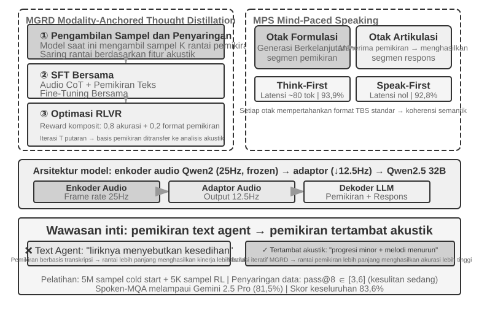
Eksperimen 9-4 ★★★: Menggunakan Step-Audio R1 untuk Penalaran Lisan End-to-End
Eksperimen ini menggunakan Step-Audio R1 untuk membandingkan beberapa konfigurasi pada tugas penalaran lisan dan dialog. Model ini terdiri dari audio encoder, audio adapter, dan decoder Qwen2.5 32B, serta memerlukan penerapan multi-GPU.
Eksperimen ini mengevaluasi dua tugas: Spoken-MQA (Spoken Math Questions) menguji apakah model dapat melakukan penalaran matematis multi-langkah setelah mendengar masalah yang disajikan secara lisan; URO-Bench (Chinese Oral Dialogue Benchmark) mengevaluasi kualitas dialog open-ended.
Konfigurasi pengujian dibagi menjadi dua dimensi. Yang pertama adalah Thinking Timing: konfigurasi penuh TBS (Think-Before-Speak), yang berfungsi sebagai baseline kontrol tanpa batasan latensi, menghasilkan semua pemikiran sebelum berbicara. Untuk mengurangi latensi, MPS menawarkan dua varian "berpikir-sambil-berbicara"—Speak-First (juga disebut spkfirst, latensi nol, dengan berbicara dan berpikir yang dimulai secara bersamaan) dan Think-First (juga disebut thkfirst, menunggu otak yang berpikir untuk menghasilkan segmen pertama sebelum berbicara, dengan latensi sekitar 80 token). Dimensi kedua adalah Arsitektur: arsitektur paralel dual-brain MPS versus model tunggal TBS tradisional.
Tabel 9-1 membandingkan akurasi matematis dan skor dialog dari konfigurasi waktu dan arsitektur yang berbeda.
Tabel 9-1 Perbandingan Konfigurasi Penalaran Lisan Step-Audio R1
Konfigurasi Spoken-MQA URO-Bench Langsung menjawab tanpa berpikir (Baseline) 70.6% 77.4 MPS Speak-First (Latensi Nol) 92.8% 82.5 MPS Think-First (~80 tok Latensi) 93.9% 84.8 TBS Penuh (Tanpa Batasan Latensi) 93.0% — Temuan yang menarik adalah bahwa Speak-First memiliki dampak minimal pada tugas-tugas berpikir (92.8% mendekati konfigurasi TBS penuh yaitu 93.0%). Alasannya adalah bahwa awal dari sebuah CoT (Chain-of-Thought) biasanya hanya menyatakan ulang konten masalah dan belum memasuki penalaran yang sebenarnya. Oleh karena itu, bahkan jika model mulai berpikir bersamaan dengan berbicara, akurasi akhirnya hampir tidak terpengaruh. Detail lain yang patut diperhatikan adalah bahwa Think-First (93.9%) bahkan sedikit lebih tinggi daripada konfigurasi TBS penuh yang tidak dibatasi latensi (93.0%). Salah satu kemungkinan penjelasannya adalah bahwa menghasilkan pemikiran dalam segmen-segmen dan mengubahnya segmen demi segmen menjadi ucapan dapat berfungsi seperti pengawasan selangkah demi selangkah dan meningkatkan kinerja; namun, perbedaannya berada dalam margin of error dan tidak boleh diinterpretasikan secara berlebihan.
Solusi 3 menginternalisasi pemikiran ke dalam satu model—perwujudan paling elegan dari "berpikir sambil berbicara"—tetapi harganya adalah tepat pada "target yang bergerak" dari awal bagian ini: satu model harus menjadi penalar terkuat dan pembicara secara real-time, dan dengan kedua kemampuan yang berkembang cepat, rute terpadu harus dilatih ulang berulang kali untuk mengimbanginya. Oleh karena itu perbedaan pendekatan di industri pada saat penulisan ini: produk terdepan yang ingin bertukar dengan otak terbaru sesuka hati (GPT-Live, Grok Voice, Pine AI) sebagian besar bertaruh pada pemisahan Solusi 2, sementara Solusi 3 sesuai untuk produk yang mengejar kealamian tertinggi dan dapat menanggung biaya pelatihan khusus. Keduanya tidak saling menggantikan; ini adalah trade-off antara kemampuan untuk mengganti model penalaran dan mengintegrasikan pemikiran dan ucapan secara lebih erat.
Antarmuka Antara Cepat dan Lambat: Apa Lagi yang Bisa Dilewatkan Selain Teks¶
(Diskusi lintas skenario ini secara singkat menyimpang dari fokus utama bab mengenai suara.) Solusi 2 mengungkapkan dimensi desain yang terabaikan: ketika pemikiran lambat menyampaikan pesan ke pemikiran cepat, ia menggunakan saluran teks (saran melalui bilah status). Teks mudah dipahami dan di-debug, tetapi ini adalah saluran yang sempit—keadaan perantara kaya dari pemikir yang lambat terjepit ke dalam beberapa kalimat. Jadi, apakah antarmuka antara cepat dan lambat harus selalu berupa teks?
Dalam game real-time, salah satu pengaturan yang paling sensitif terhadap waktu, pendekatan yang lebih langsung dapat dilakukan: sebuah Latent Bridge5. Bekukan model kecil yang bertanggung jawab atas reaksi cepat (menghasilkan puluhan tindakan per detik) maupun model lambat yang bertanggung jawab atas penalaran (menghasilkan satu pemikiran per detik), kemudian latih hanya "jembatan" kecil dari beberapa puluh juta parameter di antara keduanya. Jembatan ini memproyeksikan kesimpulan hidden-state model lambat langsung menjadi beberapa "latent tokens" dan memasukkannya ke dalam input model cepat, sama seperti model multimodal menyisipkan token visual. Ini melewati perjalanan memutar dari ide ke teks dan kembali ke representasi internal. Di beberapa permainan Atari, saluran latent-space secara substansial mengungguli saluran teks tradisional (+26% hingga +82% pada beberapa game) sambil hanya menambah sekitar 5 milidetik per langkah, cukup cepat untuk memenuhi tuntutan real-time.
Karya yang sama menarik batas yang jujur: apakah kolaborasi cepat-lambat membantu, bergantung pada apakah hambatan (bottleneck) tugas tersebut adalah "tidak dapat memikirkannya" atau "tidak dapat bereaksi pada waktunya." Jembatan ini membuahkan hasil hanya di mana pemikir lambat benar-benar lebih baik daripada reaktor cepat (di seluruh permainan korelasinya mencapai r≈0.9); di mana tugas tersebut murni tentang kontes kecepatan reaksi, jembatan terbaik pun tidak berguna. Penilaian ini berlaku lebih dari sekadar game—ini meninjau pertanyaan yang sama persis yang akan dihadapi Computer Use nanti dalam bab ini: kapan "ahli strategi lambat" layak diundang, dan kapan itu hanya menambah latensi?
End-to-end atau modular, kualitas lapisan persepsi dan eksekusi tetap penting. Model end-to-end memperbaiki latensi di tingkat arsitektur, tetapi dua dasar—mendengar secara akurat dan berbicara secara alami—tidak membaik dengan sendirinya ketika arsitektur berubah. Pendengaran yang akurat berhubungan dengan persepsi suara streaming dari Paradigma 1; di sini kita beralih ke lapisan eksekusi untuk berbicara secara alami: sintesis ucapan (speech synthesis) yang lebih mirip manusia.
Sintesis Ucapan yang Lebih Mirip Manusia¶
"Kesempurnaan" dari TTS tradisional justru merupakan masalahnya: ucapan yang sangat lancar tanpa cacat, tanpa jeda atau kata pengisi (filler), terdengar tidak dapat disangkal sebagai hasil dari mesin. "Ketidaksempurnaan" dalam ucapan manusia—jeda, pengisi ("um," "uh," "you know"), dan pengulangan sesekali—bukanlah cacat melainkan tanda-tanda alami dari proses berpikir, yang memberi tahu pendengar "saya sedang berpikir" atau "saya tidak sepenuhnya yakin." Namun AI dapat menghasilkan respons lebih cepat daripada respons itu dapat diucapkan keras-keras, dan keluarannya tiba secara fasih dan lengkap; sintesiskan apa adanya dan sifat buatan mesinnya menjadi sangat jelas.
Solusi: Delegasikan keputusan tentang di mana harus berhenti sejenak dan nada apa yang digunakan kepada LLM utama. LLM mengeluarkan tidak hanya teks, tetapi juga token kontrol (control tokens): [THINKING] menandakan jeda berpikir 1-2 detik dan suara pengisi ("um..."); [SEARCHING] menandakan jeda yang lebih pendek dan frasa keraguan ("you know...", "bagaimana saya harus mengatakannya"); [EMO:happy] menyesuaikan nada dan prosodi; [SPEED:0.8x] mengontrol kecepatan berbicara. Hanya LLM yang tahu apakah ia sedang memecahkan masalah kompleks dan harus berhenti sejenak, apakah pengguna mulai tidak sabar dan ia harus mempercepat bicaranya, atau apakah ini sekadar obrolan santai dan ia harus terdengar lebih hidup.
Dalam skema ini, TTS bertindak sebagai generator multimodal, menerima teks + control tokens sebagai input dan menghasilkan audio. Ini mensintesis ucapan secara normal untuk teks reguler, dan menghasilkan audio non-linguistik yang sesuai untuk token kontrol: [THINKING] menghasilkan "um..." yang diperpanjang, [SIGH] menghasilkan hela napas, [LAUGH:small] menghasilkan tawa ringan, [BREATH] menghasilkan suara tarikan napas.
Ada dua jalur implementasi: satu adalah mengembangkan TTS eksklusif dengan dukungan native untuk control tokens (opsi yang paling fleksibel, tetapi yang membutuhkan tim khusus); yang lainnya menggunakan voice cloning. Siapkan puluhan klip referensi untuk persona virtual yang sama, yang mencakup berbagai emosi, kecepatan, dan gaya, lalu pilih klip yang paling cocok untuk setiap kombinasi token kontrol saat memanggil API TTS seperti ElevenLabs atau Fish Audio. Pendekatan ini dapat disebarkan dalam hitungan minggu.
Eksperimen 9-5 ★★: TTS yang Digerakkan Control Token Berdasarkan Fish Audio
Gunakan kemampuan voice cloning Fish Audio S1 (hanya membutuhkan 3-10 detik referensi audio untuk zero-shot cloning timbre yang sama). Bangun perpustakaan 24 klip referensi audio, yang mencakup Emosi (Neutral/Happy/Frustrated/Thinking) x Kecepatan (Normal/Fast/Slow) x Gaya (Formal/Casual), masing-masing berdurasi sekitar 5 detik.
Contoh output LLM:
[EMO:happy][SPEED:fast]Great! Your order has been confirmed.[THINKING]Um, let me check the shipping time...[EMO:neutral][SPEED:normal]It is expected to arrive tomorrow afternoon.Lapisan eksekusi mem-parsel token dan memetakannya ke referensi audio yang sesuai:
[EMO:happy][SPEED:fast]dipetakan ke referensi "Happy+Fast+Casual";[THINKING]dipetakan ke referensi "Thinking+Slow+Formal" (dengan ritme jeda dan nada ragu-ragu);[EMO:neutral][SPEED:normal]dipetakan ke referensi "Neutral+Normal+Formal". Fish Audio memastikan timbre yang konsisten di berbagai referensi klip, hanya memvariasikan prosodi dan emosi.Bandingkan tiga konfigurasi: tanpa control tokens (lancar tetapi kaku dan jelas merupakan buatan AI), referensi klip tunggal (alami tetapi secara emosional monoton), dan perpustakaan multi-referensi (ceria dan cepat saat mengonfirmasi informasi, dengan jeda alami sebelum penjelasan dan penyampaian keseluruhan yang mendekati manusia perwakilan layanan pelanggan).
Computer Use: Agen Otomatisasi GUI¶
Sekarang Anda mungkin telah memperhatikan bahwa bab ini mencurahkan lebih banyak ruang untuk suara dibandingkan dengan dua skenario berikutnya. Hal ini disengaja. Di antara sistem multimodal real-time, teknologi suara telah berkembang paling jauh dan karenanya memberikan titik referensi terbaik. Teknologi ini telah menelusuri busur penuh dari masalah aslinya—latensi yang berlebihan dalam pipeline serial—melalui model end-to-end, interaksi full-duplex, dan berpikir sambil berbicara, hingga desain yang relatif matang saat ini. Itulah mengapa kami menceritakan kisahnya secara penuh. Saat Anda membaca bagian Computer Use dan robotika, bandingkan dengan lintasan ini: seberapa jauh masing-masing bidang telah berkembang, dan di mana masing-masing bidang masih terjebak?
Ketiga skenario ini tampak berbeda tetapi menghadapi tantangan inti yang sama: persepsi real-time, pengambilan keputusan dengan latensi rendah, dan interaksi yang berkelanjutan. Selanjutnya, kita beralih ke interaksi visual, atau Computer Use, memperluas perspektif dari modalitas pendengaran ke visual: bagaimana jika sebuah Agent tidak hanya dapat memahami ucapan tetapi juga "melihat" layar dan mengoperasikan antarmuka grafisnya?
Computer Use, juga dikenal sebagai otomatisasi GUI, memungkinkan AI untuk menggunakan perangkat lunak seperti manusia dengan mengamati layar dan mengoperasikan mouse dan keyboard—misalnya, membuka browser untuk mencari informasi, mengisi data dalam aplikasi spreadsheet, atau menyesuaikan konfigurasi dalam pengaturan sistem. Intinya adalah loop Perceive-Think-Act (Gambar 9-7):
- Agent mengambil tangkapan layar dari layar saat ini.
- Model multimodal menerima tangkapan layar dan instruksi tugas, lalu mengeluarkan pemikiran dan tindakan spesifik.
- Lapisan eksekusi melakukan tindakan di lingkungan nyata (menggerakkan mouse, mengklik, mengetik teks, dll.).
- Menunggu antarmuka merespons, mengambil tangkapan layar lagi, dan memasuki iterasi loop berikutnya.
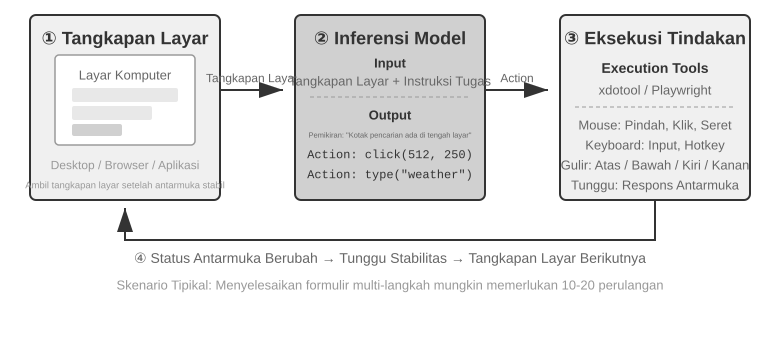
Ada tiga dimensi desain utama dalam loop ini: Action Space (operasi apa yang dapat dilakukan Agent), Visual Grounding (bagaimana menemukan elemen target dalam tangkapan layar), dan Model Architecture (bagaimana menghasilkan tindakan yang benar dari tangkapan layar).
Desain Action Space¶
Anthropic mendefinisikan tiga jenis alat yang membentuk kemampuan interaksi lengkap (Gambar 9-8):
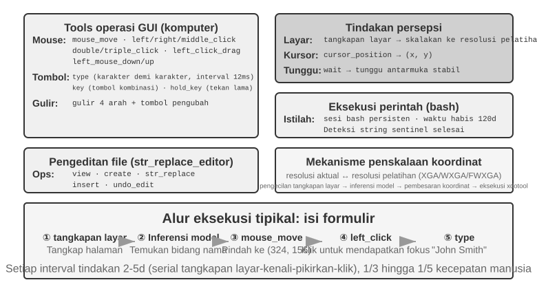
GUI Operation Tool (alat computer): Operasi mouse mencakup menggerakkan (mouse_move), klik kiri/kanan/tengah, klik ganda atau klik tiga kali, menyeret (left_click_drag), dan tindakan tekan/lepas yang lebih presisi (left_mouse_down dan left_mouse_up). Menggulir (scroll) mendukung empat arah dan dapat dikombinasikan dengan tombol pengubah. Operasi keyboard mencakup mengetik karakter demi karakter (type, dengan interval 12ms antar karakter untuk menyimulasikan pengetikan nyata), kombinasi tombol (key, mis., Ctrl+C), dan menahan tombol (hold_key). Tindakan persepsi mencakup mengambil tangkapan layar, mengambil posisi kursor (cursor_position), dan menunggu (wait).
Command Execution Tool (alat bash): Menyediakan sesi terminal bash persisten dengan batas waktu 120 detik. Alat ini menggunakan string sentinel untuk mendeteksi penyelesaian perintah dan mempertahankan status lingkungan di beberapa pemanggilan (mis., setelah cd ke sebuah direktori, panggilan berikutnya tetap berada di direktori tersebut).
File Editing Tool (str_replace_editor): Memungkinkan pengeditan yang aman melalui pencocokan string dan mendukung operasi lihat, buat, ganti, sisipkan, dan urungkan. Ini lebih presisi daripada menimpa seluruh file dan lebih kecil kemungkinannya untuk memodifikasi konten yang tidak terkait secara tidak sengaja.
Eksperimen 9-6 ★: Menjalankan Demo Anthropic Computer Use
Kontainer ini mencakup lingkungan desktop Ubuntu lengkap dengan browser, terminal, dan alat umum lainnya. Frontend menerima instruksi tugas, backend mengirim instruksi tersebut dan tangkapan layar ke Claude, dan model mengembalikan tindakan seperti menggerakkan mouse, mengklik, dan mengetik. Sistem kemudian mengeksekusi tindakan tersebut di desktop virtual.
Pengamatan utama: Setiap siklus tindakan membutuhkan waktu 2-5 detik, membuat sistem jauh lebih lambat daripada manusia. Meskipun demikian, ini menunjukkan perencanaan yang baik pada tugas-tugas umum dan secara otonom memecahnya menjadi urutan tindakan yang masuk akal.
Visual Grounding¶
Dalam setiap iterasi loop, model perlu menemukan elemen target di tangkapan layar secara akurat—"Di mana kotak pencariannya?" "Apa koordinat tombol kirim?" Ini adalah masalah visual grounding. Saat ini, ada dua pendekatan utama: yang pertama adalah mengubah pelokalan menjadi masalah pilihan ganda—pertama beri anotasi elemen antarmuka dengan angka, dan model hanya perlu memilih satu; yang lainnya adalah prediksi koordinat murni—membiarkan model "melihat" tangkapan layar dan melaporkan koordinat secara langsung, persis seperti manusia. Pendekatan pilihan ganda memiliki dua metode implementasi: anotasi visual murni (Set-of-Mark asli, menggunakan model segmentasi untuk menyegmentasi wilayah kandidat dalam gambar) dan pengindeksan elemen terstruktur (DOM/Accessibility Tree, secara langsung membaca struktur inheren antarmuka). Keuntungan umum dari pendekatan pilihan ganda adalah mengubah masalah terbuka "temukan tombol dalam tangkapan layar dan prediksi koordinatnya" menjadi masalah tertutup "pilih satu dari elemen yang sudah dianotasi"—sama seperti pertanyaan pilihan ganda yang lebih mudah dijawab dengan benar daripada pertanyaan isian dalam ujian, model hanya perlu mengatakan "klik [123]" daripada "klik tombol biru sekitar 200 piksel di sebelah kanan sudut kiri atas layar."
Set-of-Mark: Metode Anotasi Visual.
Set-of-Mark (SoM) asli diusulkan oleh Microsoft Research pada tahun 2023, awalnya untuk membuka kemampuan visual grounding dari GPT-4V. Ini adalah metode visual murni: menggunakan model segmentasi gambar (SAM, SEEM, dll.) untuk menyegmentasi wilayah kandidat dalam tangkapan layar secara otomatis, menempatkan penanda bernomor pada setiap wilayah, dan model melihat gambar dengan angka-angka. Model hanya perlu melaporkan angka tersebut, dan sistem mengubahnya menjadi koordinat tengah dari wilayah yang sesuai. Seluruh proses tidak memerlukan DOM atau struktur antarmuka internal apa pun, sehingga sama-sama berlaku untuk perangkat lunak desktop asli dan antarmuka game—selama model segmentasi dapat mengidentifikasi wilayah kandidat.
Pengindeksan Elemen Terstruktur: Implementasi Terstruktur dari Ide SoM di Web.
Ketika antarmuka itu sendiri menyediakan informasi terstruktur, anotasi dapat menjadi lebih presisi. Sebelum rendering, halaman web modern mendefinisikan struktur elemen lengkap (pohon DOM) dan peran semantik yang mengidentifikasi tombol, bidang input, dan kontrol lainnya. Accessibility tree memberikan informasi serupa untuk banyak aplikasi desktop. Daripada meminta model segmentasi untuk menebak wilayah mana yang merupakan tombol dari piksel saja, sistem dapat menanyakan antarmuka secara langsung untuk elemen yang dapat dikliknya. Sistem Web Agent seperti browser-use melakukan hal ini: mereka menghitung dan menomori elemen interaktif dari DOM. Ini adalah implementasi terstruktur dari ide SoM untuk web (Gambar 9-9). Prosesnya memiliki empat langkah:
- Mendapatkan representasi terstruktur (pohon DOM) dan informasi aksesibilitas untuk halaman tersebut melalui antarmuka debugging browser (CDP, Chrome DevTools Protocol)
- Mendeteksi elemen mana yang interaktif secara otomatis (tombol, kotak input, tautan, dll.)
- Menganotasi setiap elemen interaktif dengan ID unik dan menggambar kotak pembatas (bounding box) pada tangkapan layar
- Secara bersamaan menghasilkan daftar teks yang mendeskripsikan elemen yang sesuai dengan setiap ID
Tangkapan layar: [Elemen kunci pada gambar dianotasi dengan ID seperti [1], [2], [3], [4]]
Elemen:
[1] <input type="text" placeholder="Search" aria-label="Search" />
[2] <button id="submit-btn" aria-label="Submit form" />
[3] <input type="text" placeholder="Enter your name" value="" />
[4] <a href="/docs" aria-label="Documentation" />
Model hanya perlu menghasilkan ID, dan sistem secara otomatis mengklik bagian tengah elemen yang sesuai. Pendekatan ini tidak menghemat token karena semua data anotasi tetap harus dikirim ke model, tetapi memberikan pelokalan yang akurat dan stabil sembari menghindari deteksi yang terlewat dan positif palsu yang dapat diperkenalkan oleh model segmentasi.
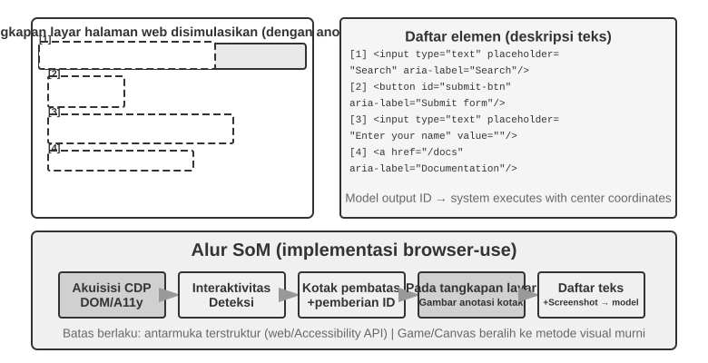
Prediksi Koordinat Murni.
Rute ketiga melewatkan anotasi dan meminta model untuk mengeluarkan koordinat secara langsung. Sistem seperti SeeClick dan computer use Claude mengandalkan model visi yang dilatih pada dataset besar tangkapan layar GUI yang dipasangkan dengan posisi elemen. Model ini belajar memetakan deskripsi bahasa alami (mis., "klik tombol kirim") secara langsung ke koordinat tangkapan layar yang tepat, mengandalkan persepsi visual seperti pengguna manusia.
Dalam skema prediksi koordinat, pemahaman model tentang koordinat sangat bergantung pada resolusi yang digunakan selama pelatihan (Gambar 9-10). Claude dilatih menggunakan XGA (1024×768), WXGA (1280×800), dan FWXGA (1366×768). Jika resolusi tangkapan layar input tidak cocok, prediksi koordinat model akan bergeser secara sistematis—seperti mengukur jarak di peta kecil dan kemudian menerapkannya secara langsung ke peta besar. Oleh karena itu, mekanisme penskalaan koordinat dua arah harus diimplementasikan pada lapisan alat, dan resolusi target harus dipilih berdasarkan rasio aspek untuk menghindari peregangan tidak seragam yang mendistorsi gambar dan akibatnya membiaskan penilaian koordinat. Misalnya, jika resolusi layar sebenarnya adalah 2560×1440 (16:9), target yang paling sesuai di antara tiga opsi yang didukung Claude adalah FWXGA (1366×768), yang memiliki rasio aspek terdekat dengan 16:9. Tangkapan layar diskalakan secara proporsional menjadi 1366×768 dan diumpankan ke model; setelah model mengeluarkan koordinat klik (683, 384), koordinat tersebut dipetakan secara terbalik ke koordinat sebenarnya (683×2560/1366, 384×1440/768) ≈ (1280, 720). Sebaliknya, jika gambar 16:9 diregangkan secara paksa ke 4:3 1024×768, gambar akan dikompresi secara horizontal, menyebabkan prediksi koordinat model bergeser secara sistematis.
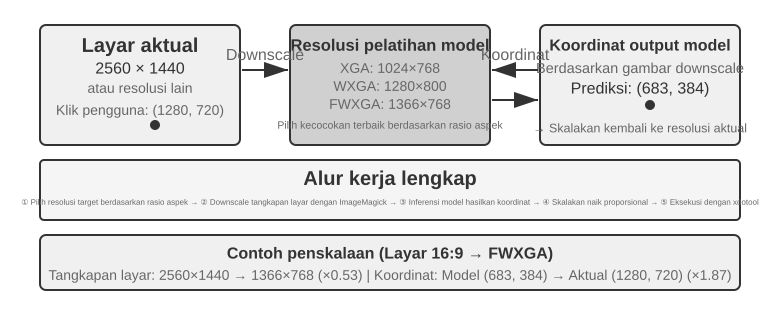
Pilihan di antara ketiga rute tersebut dapat diringkas sebagai berikut: ketika informasi terstruktur tersedia, prioritaskan pengindeksan DOM/accessibility-tree untuk pelokalan yang paling akurat dan stabil. Ketika tidak tersedia—dalam perangkat lunak desktop asli seperti Photoshop, antarmuka yang dirender canvas/WebGL, atau game—gunakan anotasi visual (rute SoM asli) atau prediksi koordinat. Anotasi visual mengubah pelokalan menjadi masalah pilihan ganda, membuatnya lebih ramah terhadap model serbaguna tanpa pelatihan khusus. Prediksi koordinat menghilangkan langkah anotasi dan lebih langsung untuk model yang dilatih khusus pada pelokalan GUI. Kedua pendekatan ini masih kesulitan dengan elemen kecil dan antarmuka yang padat.
Eksperimen 9-7 ★: Menggunakan browser-use untuk Mengimplementasikan Operasi Browser Otomatis
Gabungkan Playwright, framework otomatisasi browser, dengan model multimodal untuk mengimplementasikan operasi browser yang digerakkan oleh instruksi bahasa alami. Aktifkan visualisasi SoM dan simpan tangkapan layar dengan anotasi kotak pembatas (bounding box) sebelum setiap keputusan.
Tugas pengujian "Buka Google dan cari cuaca San Francisco": Setelah sistem mulai, tangkapan layar menampilkan halaman pencarian Google, dengan semua elemen interaktif dianotasi dengan kotak pembatas merah dan nomor ID (bilah alamat
[1], kotak pencarian[2], tombol cari[3], tombol "Saya Lagi Beruntung"[4], dll.) → Model menganalisis dan mengklik[2](kotak pencarian) → Kotak pencarian mendapat fokus dan model mengetik "cuaca San Francisco hari ini" → Model mengklik[3](tombol cari) → Halaman bernavigasi ke hasil pencarian, dan tangkapan layar berikutnya menampilkan elemen yang dianotasi dalam kartu cuaca, memungkinkan model untuk mengidentifikasi dan mengekstrak informasi seperti suhu dan kondisi cuaca. Seluruh proses memakan waktu 5 langkah dan sekitar 20 detik.
Computer Use Agent yang Dapat Menonton Animasi dan Mendengar Suara¶
Sejauh ini, persepsi Computer Use didasarkan pada asumsi implisit: layar bersifat statis—ambil tangkapan layar, pikirkan langkah berikutnya, klik, dan ambil tangkapan layar berikutnya. Layar yang sebenarnya memutar video, menampilkan notifikasi kilat yang menghilang dalam hitungan detik, dan memutar audio dari rapat. Sebuah Agent yang membuka matanya hanya setiap 3–5 detik sekali dan sama sekali tidak memiliki telinga akan buta dan tuli terhadap semua yang terjadi di antara dua frame. Menonton rekaman layar, bergabung ke rapat, mengikuti petunjuk suara, menangkap kotak dialog sebelum menghilang—seluruh kategori pekerjaan komputer sehari-hari ini secara efektif terlarang bagi Computer Use Agent saat ini.
Apa yang benar-benar perlu didesain ulang di sini bukanlah "antarmuka tindakan", melainkan "antarmuka pengamatan"6. Ide intinya adalah memisahkan pengamatan (berkelanjutan, adaptif, multimodal) dari tindakan (diskrit), menciptakan lapisan middleware perseptual yang berada di antara lingkungan dan model Computer Use mana pun tanpa memerlukan pelatihan ulang. Kita dapat menyebutnya Agent–Computer Observation Interface (AOI). Antarmuka ini memiliki tiga komponen yang "dikendalikan oleh gerbang" (gated): Pertama, pengambilan keyframe antar-frame—menggunakan gerbang piksel yang sangat murah untuk melewati frame yang hampir tidak berubah, kemudian menggunakan model kecil untuk menentukan apakah ada perubahan bermakna yang terjadi, mengambil frame hanya saat ada perubahan, menghasilkan biaya yang hampir nol untuk layar statis; Kedua, transkripsi ucapan dengan gerbang volume—hanya memanggil pengenalan ucapan saat ada suara, memberi Agent "telinga" untuk pertama kalinya; Ketiga, dan yang paling kritis, mengubah pengamatan menjadi deskripsi tekstual yang persisten—meminta model mendeskripsikan frame yang ditangkap dalam satu kalimat (mis., "Munculan tersebut baru saja mengatakan bahwa tanggal rilis telah diubah menjadi 28 April"), dan bahkan jika gambar asli kemudian dihapus dari konteks, teks ini tetap berada di dalam memori, meneruskan informasi dinamis tersebut dalam bentuk tekstual.
Temuan yang berlawanan dengan intuisi adalah bahwa hal yang benar-benar penting bukanlah pemilihan frame, melainkan konversi frame yang dipilih menjadi teks yang persisten, karena teks adalah modalitas yang paling baik ditangani oleh LLM Agent. Pada delapan model, mulai dari model berparameter 7B hingga sistem skala perbatasan (frontier-scale), middleware ini memberikan peningkatan +17 hingga +48 poin persentase tanpa pelatihan ulang apa pun, dengan celah terlebar pada tugas-tugas suara: dengan adanya lapisan perseptual ini, Agent akhirnya dapat menyelesaikan tugas-tugas suara yang sebelumnya "dapat didengar tetapi tidak dapat ditindaklanjuti". Namun, ini bukanlah konfigurasi yang berlaku untuk semua—pada beberapa model yang lebih baru, memasukkan terlalu banyak token gambar akan mengganggu proses penalaran dan menurunkan performa. Jadi komponen-komponennya harus dipilih per model, tidak dinyalakan secara keseluruhan. Ini adalah pelajaran yang sama dengan trade-off antara Set-of-Mark versus prediksi koordinat: tidak ada solusi instan (silver bullet) dalam skema persepsi; Anda harus mengonfigurasinya agar sesuai dengan temperamen model.
Seluler: Hambatan Ekosistem Lebih Sulit Daripada Teknologi¶
Computer Use juga berkembang ke perangkat seluler. Sistem seluler dan desktop memang berbeda secara teknis: alih-alih mengandalkan koordinat mouse dan input keyboard, action space seluler biasanya menggunakan API layanan aksesibilitas sistem (mis., AccessibilityService di Android) untuk membaca elemen antarmuka dan mengeluarkan klik atau memasukkan teks. Interaksi juga beralih dari penunjuk mouse ke gestur sentuh, sehingga mengubah makna koordinat. Posisi (x, y) yang sama dapat menunjukkan ketukan, tekanan lama, atau titik awal dari geseran (swipe), sehingga tindakan tersebut juga harus menentukan jenis gestur. Benchmark seluler seperti AndroidWorld, yang diperkenalkan di Bab 6, mengevaluasi kemampuan Agent untuk menyelesaikan tugas dalam aplikasi nyata di dalam action space ini.
Namun, apa yang benar-benar menghalangi Computer Use di seluler seringkali bukanlah perbedaan teknis ini, melainkan hambatan ekosistem. Beberapa produsen ponsel telah mencoba mengintegrasikan asisten AI ke dalam ponsel tingkat konsumen sehingga asisten tersebut dapat secara otomatis mengoperasikan aplikasi sehari-hari seperti WeChat, Taobao, dan Alipay, tetapi mereka dengan cepat menemui pembatasan platform.
Hal ini mengungkap tantangan unik bagi Computer Use: ecosystem barriers. Alasan mendasar di balik pembatasan ini adalah konflik model bisnis. Logika monetisasi inti dari aplikasi internet tradisional adalah traffic and attention: pengguna melihat iklan saat menggulir feed, dipandu oleh algoritma rekomendasi saat mencari produk, dan melakukan pembelian impulsif saat menjelajahi halaman. Ketika sebuah Agent beroperasi atas nama pengguna, rantai monetisasi tersebut dilewati sepenuhnya: AI mengabaikan iklan, tidak melakukan pembelian impulsif, langsung menuju tujuan, menyelesaikan tugas, dan pergi. Bagi platform yang hidup dari iklan dan lalu lintas, setiap operasi Agent mengikis fondasi dari model bisnis tersebut.
Ini berarti bahwa Computer Use tidak hanya menghadapi tindakan balasan teknis seperti CAPTCHA, tetapi juga konflik kepentingan struktural. Konflik ini akan sulit diselesaikan dalam jangka pendek dan menimbulkan hambatan yang lebih besar untuk adopsi konsumen daripada sekadar masalah teknis.
Performa Real-Time: Tantangan Inti yang Belum Terpecahkan¶
OSWorld, yang metodologi evaluasinya dijelaskan pada Bab 6, adalah tolok ukur yang banyak digunakan untuk Computer Use yang menguji kemampuan Agent untuk menyelesaikan tugas lintas aplikasi di lingkungan nyata Ubuntu/Windows/macOS. Model general-purpose awal hanya mencapai sekitar 20% tingkat keberhasilan pada tolok ukur ini. Model khusus berikutnya dan model general-purpose yang lebih kuat terus mendorong tingkat keberhasilan menjadi lebih tinggi, secara bertahap mendekati performa tingkat manusia pada saat penulisan ini. Namun, tingkat keberhasilan masih jauh dari garis akhir—bottleneck sebenarnya telah bergeser dari "bisakah ia melakukannya dengan benar?" menjadi "bisakah ia melakukannya dengan cepat?"
Studi efisiensi OSWorld-Human menghasilkan temuan yang menyadarkan: bahkan ketika tugas tersebut pada akhirnya berhasil, Agent membutuhkan langkah yang jauh lebih banyak daripada manusia, dan latensi inferensi per langkah terus bertambah seiring berjalannya tugas—semakin panjang konteksnya, semakin lambat model memutuskan, sehingga langkah-langkah akhir sering kali memakan waktu jauh lebih lama daripada langkah-langkah awal. Penyesuaian pemformatan dokumen yang membutuhkan waktu puluhan detik bagi manusia dapat memakan waktu beberapa menit untuk diselesaikan oleh Agent. Akurasi tingkat manusia tidak sama dengan kepraktisan penggunaan; efisiensi adalah bottleneck yang sebenarnya.
Akar penyebabnya mencerminkan skenario ucapan (speech): dalam loop serial "screenshot-think-click", bahkan dengan setiap tahapan dioptimalkan hingga maksimal, akumulasi penundaan langkah demi langkah tetap tidak dapat diterima. Masalah yang lebih mendalam adalah Computer Use saat ini sama sekali tidak dapat berpikir ke depan. Jika Agent dapat memprediksi langkah selanjutnya sambil mengeksekusi langkah saat ini—memikirkan di mana harus mengklik selanjutnya sementara halaman masih dimuat—ia dapat melakukan overlap proses berpikir dengan eksekusi dan memotong total latensi secara tajam (tuntutan yang sama seperti thinking-while-speaking di awal bab ini dan asynchronous Agent dengan "continuous thinking" pada Bab 4, yang dibingkai ulang di sini sebagai thinking-while-operating).
Tidak seperti domain speech, saat ini tidak ada solusi sistematis untuk meningkatkan performa real-time dari Computer Use itu sendiri—membuat loop "screenshot-think-click" menjadi lebih cepat—dan ia tetap terjebak dalam loop diskrit berupa tangkapan layar frame-by-frame. Namun, sebuah jalan pintas (workaround) telah terbukti efektif, menggunakan pemisahan (decoupling) fast-slow yang muncul berulang kali dalam bab ini: karena sulit untuk membuat Computer Use agent yang lambat menjadi lebih cepat, jangan biarkan pengguna menunggunya. Gunakan dua model secara bersamaan: model cepat untuk speech dan model lambat untuk operasi komputer7. Model cepat menangani percakapan suara real-time, sementara VLM mutakhir beroperasi langkah demi langkah di dalam browser. Keduanya berkomunikasi hanya melalui "plain text contract" (kontrak teks biasa) minimal: setiap kali Agent yang lambat melakukan sebuah aksi, ia memperbarui ringkasan status bergulir ("Sedang mengisi formulir, masih membutuhkan tanggal lahir Anda"). Agent cepat menggunakan ini untuk menjawab pengguna secara real-time dan meneruskan informasi baru apa pun yang diberikan pengguna secara lisan ke Agent lambat. Yang krusial, Agent cepat tidak boleh mengatakan "selesai" sampai ringkasan status mengonfirmasi penyelesaian. Ini adalah skenario "berbicara di telepon sambil membiarkan komputer beroperasi sendiri." Dalam eksperimen, decoupling ini membuat respons suara sekitar 15 kali lebih cepat daripada model tunggal yang beroperasi dan berbicara sekaligus (latensi median 0,58 detik vs 8,64 detik), tanpa penurunan tingkat keberhasilan tugas. Hapus saluran teks antara yang cepat dan yang lambat, dan tingkat keberhasilan runtuh ke angka nol—informasi penting yang diberikan pengguna secara lisan tidak dapat lagi mencapai browser. Ini adalah ide yang sama dengan Latent Bridge sebelumnya dan thinking-while-speaking dalam skenario speech: ketika satu komponen secara inheren lambat, biarkan yang cepat mengisi waktu tunggu pengguna—dan "plain text contract" itu, pada dasarnya, adalah konsep Agent Status Bar yang diperkenalkan di Bab 2. Mempercepat loop Computer Use itu sendiri mungkin akan menjadi arah penelitian penting berikutnya, tetapi menyembunyikan kelambatan di balik decoupling fast-slow sudah menjadi jawaban yang dapat diterapkan.
Robot Manipulation: Dari Kontrol Real-Time ke Pelatihan dan Generalisasi¶
Catatan Membaca: Bagian ini membahas kontrol robot. Eksperimen 9-10 mendemonstrasikan metode untuk mentransfer dari simulasi ke realitas—bagian pelatihan dalam simulasi (langkah 3-4) dapat diselesaikan hanya dengan menggunakan server GPU; namun, untuk mereproduksi seluruh pipeline dari awal hingga akhir (termasuk langkah-langkah deployment dunia nyata), perangkat keras nyata seperti lengan robot SO100 diperlukan. Jika Anda saat ini tidak tertarik pada robotika, Anda dapat melewati bagian ini; hal itu tidak akan memengaruhi pembacaan bab-bab lain.
Voice Agent melawan latensi dalam modalitas pendengaran; Computer Use melakukannya dalam modalitas visual. Ketika sebuah Agent harus mengendalikan robot di dunia fisik, latensi dan multimodalitas menjadi semakin menantang—tindakan memiliki konsekuensi yang tidak dapat diubah (irreversible), dan satu tabrakan dapat merusak objek atau robot itu sendiri. Bagian ini pertama-tama menunjukkan bagaimana robot menjinakkan masalah kontrol real-time dengan arsitektur dua lapis dan Action Chunking, lalu beralih ke masalah yang lebih sulit yang mereka hadapi saat ini—pelatihan dan generalisasi: dari mana data berasal, dan bagaimana model ditransfer lintas tugas dan platform.
Perangkat Keras Bukanlah Bottleneck; Algoritma Adalah Bottleneck-nya¶
Mengapa robot belum diadopsi secara luas dalam pengaturan open-ended yang general-purpose? Apakah bottleneck-nya ada pada perangkat keras (hardware) atau algoritma? Proyek XLeRobot memberikan contoh tandingan yang kuat: ketika dikendalikan dari jarak jauh oleh manusia melalui headset VR, robot beroda lengan ganda yang berharga kurang dari $1.000 sudah dapat melakukan berbagai tugas rumah tangga dengan lancar. Robot Unitree juga dapat menangani tugas rumah tangga yang lebih kompleks yang membutuhkan tangan cekatan ketika dioperasikan oleh manusia. Latensi teleoperasi (teleoperation) adalah sekitar 100-200ms, dekat dengan waktu respons yang diperlukan untuk interaksi fisik. Pada platform berbiaya rendah saat ini, resolusi sensor, presisi aktuator, dan frekuensi kontrol—berapa kali per detik robot memperbarui perintah tindakannya—sudah cukup untuk tugas-tugas praktis. Frekuensi kontrol yang lebih rendah menghasilkan gerakan yang kurang mulus dan meningkatkan jitter atau penyimpangan dari lintasan target.
Klaim ini membutuhkan batasan yang jelas: contoh teleoperasi hanya menunjukkan bahwa perangkat keras berbiaya rendah yang ada, dikombinasikan dengan kecerdasan manusia, sudah cukup untuk tugas manipulasi rumah tangga yang bergantung terutama pada umpan balik visual. Ini tidak berarti bahwa perangkat keras tersebut memadai dalam segala hal. Tidak adanya penginderaan taktil serta biaya dan keandalan tangan yang cekatan (dexterous hands) tetap menjadi batasan yang sudah dikenal. Untuk tugas yang sangat bergantung pada kontrol kekuatan presisi dan umpan balik taktil, perangkat keras mungkin memang menjadi bottleneck-nya. Pernyataan "perangkat keras bukanlah bottleneck" oleh karena itu terbatas pada kelas tugas yang dibahas di bagian ini.
Untuk tugas-tugas ini, kesenjangan sebenarnya terletak pada lapisan algoritmik, yang diuraikan dalam dua subbagian berikut.
Eksperimen 9-8 ★: Pengalaman Teleoperasi XLeRobot
XLeRobot mendukung beberapa metode teleoperasi, termasuk keyboard, pengontrol Xbox, Nintendo Switch Joy-Con, dan headset VR. Kendalikan robot secara manual saat mengambil dan meletakkan benda atau menyeka permukaan, dan amati latensi respons, presisi gerakan, serta kualitas penyelesaian tugasnya. Pengalaman langsung ini membangun pemahaman intuitif tentang kemampuan perangkat keras: di bawah kendali manusia, robot dapat melakukan berbagai tugas yang tak terduga, menunjukkan bahwa algoritma daripada perangkat keras adalah bottleneck saat ini.8
Arsitektur Dua Lapis: Pemisahan Perencanaan dan Kontrol¶
Robot perlu membuat keputusan pada dua skala waktu yang berbeda untuk menyelesaikan tugas rumah tangga yang kompleks. Lapisan pertama adalah long-horizon planning (perencanaan jangka panjang) yang lebih lambat: menguraikan instruksi tingkat tinggi seperti "bersihkan dapur" menjadi urutan sub-tujuan (membersihkan meja, memuat mesin pencuci piring, menyeka permukaan). Ini membutuhkan pemahaman semantik lingkungan, penalaran tentang dependensi tugas, dan perencanaan urutan tindakan multi-langkah—mirip dengan bagaimana seseorang berpikir tentang "apa yang harus dilakukan pertama kali dan apa yang harus dilakukan selanjutnya" sebelum memulai. Lapisan kedua adalah VLA control (Vision-Language-Action model) yang lebih cepat: mengeksekusi setiap operasi spesifik ("berjalan ke wastafel," "mengambil kain," "menyeka meja"), terus-menerus mengeluarkan sinyal kontrol berdasarkan masukan visual saat ini dan instruksi bahasa untuk memastikan gerakan robot yang halus dan koheren.
Arsitektur dua lapis ini memisahkan tanggung jawab secara efektif: long-horizon planning menangani "apa yang harus dilakukan," sementara VLA control menangani "bagaimana melakukannya." Kombinasi pengambilan keputusan tingkat tinggi yang lambat dan eksekusi tingkat rendah yang cepat ini sangat mirip dengan arsitektur fast-slow yang dijelaskan sebelumnya untuk speech: keduanya menugaskan penalaran kompleks dan respons real-time ke modul yang berbeda. Namun, pemisahan perencanaan/kontrol (planning/control split) berkaitan dengan penalaran mendalam yang lambat versus respons real-time yang cepat, bukan pemisahan pemikiran/ekspresi antara Formulation Brain dan Articulation Brain milik MPS dalam Solusi 3. MPS memisahkan berpikir dari berbicara; arsitektur robotika memisahkan perencanaan global dari eksekusi real-time. Oleh karena itu, kedua arsitektur tersebut membagi pekerjaan pada dimensi yang berbeda.
Batasan real-time tidak hilang; mereka telah didorong turun ke lapisan VLA control, di mana Action Chunking membantu memitigasinya (lihat subbagian "VLA Control" di bawah). Model menghasilkan urutan pendek dari tindakan masa depan dalam satu inferensi tunggal, dan thread kontrol memutarnya kembali (replay) pada frekuensi tinggi, mengamortisasi latensi inferensi di atas eksekusi seluruh urutan tersebut. Ini menciptakan trade-off (kompromi) yang tak terhindarkan antara kehalusan dan daya tanggap (responsiveness): chunk yang lebih panjang menyebarkan latensi pada lebih banyak tindakan dan menghasilkan gerakan yang lebih halus, tetapi model tidak menerima masukan visual baru selama interval tersebut dan oleh karena itu bereaksi lebih lambat terhadap perubahan mendadak, seperti objek yang dipindahkan atau tangan yang menghalangi jalan. Arsitektur dua lapis tidak menghilangkan ketegangan ini; ia hanya memindahkannya.
Fokus bab ini sekarang bergeser: dalam robotika, ketegangan real-time sebagian telah diredakan oleh pemisahan (decoupling) dua lapis dan Action Chunking, sementara pelatihan dan generalisasi—bagaimana mendapatkan cukup data demonstrasi dan membuat model menggeneralisasi di berbagai tugas dan platform—telah menjadi perhatian utama. Subbagian berikut memperluas tema lingkungan simulasi dari Bab 6 dan Reinforcement Learning (RL) dari Bab 7 ke dalam dunia fisik.
Tantangan baru ini terutama jatuh pada lapisan VLA control. Pikirkan VLA sebagai "VLM + output tindakan": VLM (Vision-Language Model—model besar yang memahami gambar dan teks) menangani persepsi dan penalaran, sementara VLA juga harus bertindak—dan tindakan (action) adalah letak kesulitan sebenarnya. Saat ini, lapisan VLA control dilatih terutama melalui Imitation Learning, atau Behavior Cloning, yang mempelajari pemetaan dari observasi ke tindakan menggunakan koleksi besar demonstrasi manusia. OpenVLA, RT-2, dan π₀ semuanya masuk dalam kategori ini. Reinforcement Learning belakangan ini muncul sebagai teknik pelengkap. Meskipun VLA yang dilatih dengan RL dapat berkinerja baik pada tugas-tugas individual, mereka sering kali menggeneralisasi dengan buruk. Misalnya, SimpleVLA-RL dari Bab 7 melaporkan hasil tugas tunggal (single-task) yang kuat pada LIBERO, tetapi ia dilatih secara terpisah untuk setiap tugas daripada sebagai satu model terpadu yang menggeneralisasi secara Zero-Shot di semua tugas. Pola satu kali pelatihan per tugas (one-training-run-per-task) ini berarti bahwa setiap tugas baru membutuhkan pengumpulan data dan pelatihan ulang yang baru.
Dua bagian berikut mendalami solusi teknis spesifik untuk long-horizon planning dan VLA control, secara berurutan.
Long-Horizon Planning: Dari VLM ke Model Embodied Reasoning Khusus¶
VLM yang bersifat general-purpose sudah memiliki kemampuan Embodied Reasoning yang layak. Gemini Robotics-ER 1.5 dari Google DeepMind secara khusus dioptimalkan untuk Embodied Reasoning (memahami posisi, pergerakan, dan hubungan kausal objek di dunia fisik). Model ini mencapai rata-rata 62,8% di 15 tolok ukur akademik (Point-Bench, RefSpatial, RoboSpatial, BLINK, dll.), melampaui GPT-4o (60,6%) dan Gemini 2.5 Pro (59,3%). Keunggulan utamanya meliputi: pemahaman spasial (spatial understanding) dan lokalisasi objek (object localization) tingkat lanjut, penalaran temporal (memprediksi konsekuensi tindakan seperti "apa yang terjadi jika saya mendorong cangkir ini"), pengurutan tugas (menguraikan instruksi tingkat tinggi ke dalam langkah-langkah yang lebih kecil), dan dukungan bawaan (native) untuk mekanisme pemikiran serta pemanggilan alat (Tool Calls).9
Eksperimen 9-9 ★★: Menggunakan Gemini Robotics-ER 1.5 untuk Menggerakkan Navigasi Otonom XLeRobot
Gunakan pustaka RoboCrew dengan Gemini Robotics-ER 1.5 sebagai model long-horizon planning, menumpangkan (overlay) anotasi skala sudut pada gambar kamera. Sistem ini hanya menyediakan tiga alat (tools) sederhana: bergerak maju, belok kiri, dan belok kanan. Diberikan tugas "temukan dapur dan pergi ke sana," model membuat keputusan pada 0,5-1Hz. Ia mengidentifikasi fitur visual seperti koridor, pintu, dan furnitur; menyimpulkan bahwa dapur mungkin ada di sebelah kiri dan kemudian berbelok ke arah tersebut; lalu melihat kulkas di depan dan terus maju. Sistem ini juga dapat diperluas dengan kontrol suara, menggunakan kata pemicu (wake word) untuk memulai tugas baru. Eksperimen ini mengungkap batasan VLM dalam long-horizon planning: penalaran spasial dan dekomposisi tugas mereka sudah kuat, tetapi ketahanan (robustness) mereka di lingkungan yang kompleks dan konsistensi di atas beberapa langkah penalaran masih perlu perbaikan.10
VLA Control: Dari Data Demonstrasi ke Generalisasi Cross-Embodiment¶
Dalam lapisan eksekusi dari arsitektur dua lapis, tiga model representatif—RT-2, OpenVLA, dan π₀—semuanya fokus pada VLA control, yaitu, mengeluarkan tindakan robot secara real-time berdasarkan gambar kamera dan instruksi bahasa (Gambar 9-11). Mereka mengikuti dua pendekatan berbeda untuk representasi tindakan: discrete action tokens dan continuous trajectory generation.
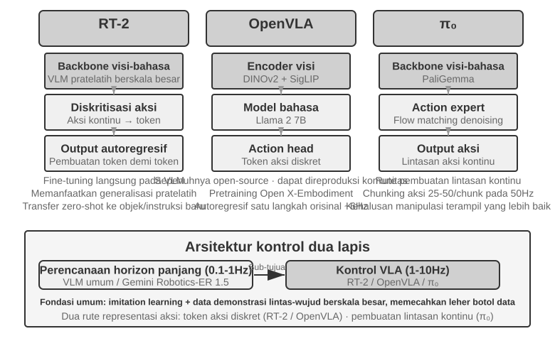
RT-2 dan OpenVLA: Rute Discrete Action Token.
RT-2 memelopori rute ini: ia secara langsung melakukan fine-tuning pada vision-language model berskala besar, mendiskritisasi (discretizing) tindakan kontinu robot menjadi token dan mengeluarkannya secara autoregresif satu per satu, seperti menghasilkan teks. Ia memanfaatkan kemampuan generalisasi dari model pra-pelatihan (pre-trained model) untuk meningkatkan Zero-Shot transfer ke objek dan instruksi baru. OpenVLA mengikuti skema representasi tindakan RT-2, menyatukan language model dan vision encoder dalam arsitektur tunggal. Model ini mengambil gambar dan instruksi teks sebagai input dan mengeluarkan action tokens. Pelatihan dilakukan dalam dua tahap: pertama, pra-pelatihan (pre-training) pada dataset lintas platform (cross-platform) berskala besar yaitu Open X-Embodiment (mencakup demonstrasi manipulasi dunia nyata dari lebih dari 20 platform robot) untuk mempelajari pengetahuan manipulasi umum (pola tindakan seperti "menggenggam" dan "meletakkan" adalah hal umum di berbagai robot); kedua, fine-tuning dengan sejumlah kecil data untuk platform tertentu. Karena representasi tindakan mereka serupa, perbedaan praktis yang ditekankan di sini terletak pada keterbukaan dan pilihan teknik (engineering choices): RT-2 dan data pelatihannya adalah internal Google, sementara OpenVLA sepenuhnya open-source—sebuah model tulang punggung (backbone) open-source (Llama 2 plus vision encoder) yang dipasangkan dengan dataset publik, membuat tumpukan (stack) OpenVLA dapat direproduksi dan diperluas oleh komunitas yang lebih luas.
Action Chunking: Teknik Kompensasi Frekuensi Universal dalam Domain VLA.
Karena inferensi model besar berjalan lambat, VLA menjalankan inferensi pada frekuensi yang jauh lebih rendah daripada operasi pengendali (controllers) robot tradisional. Kontrol tradisional biasanya berjalan pada 50-1000Hz, sedangkan inferensi VLA biasanya hanya berjalan pada sekitar 1-10Hz—kesenjangan yang dapat berkisar dari satu hingga tiga urutan besarnya (orders of magnitude). OpenVLA asli menggambarkan masalah ini: ia hanya mengeluarkan satu tindakan per inferensi, pada sekitar 6Hz menggunakan single-step autoregressive prediction, dan gerakannya yang tersentak-sentak (jerky) adalah salah satu kekurangannya yang paling banyak dikritik. Action Chunking adalah teknik umum untuk menjembatani kesenjangan ini. Pertama kali diusulkan oleh ACT (Zhao dkk., 2023) dan kemudian diadopsi oleh π₀, OpenVLA-OFT, dan lainnya, teknik ini membuat model menghasilkan urutan pendek tindakan masa depan dalam setiap inferensi alih-alih satu tindakan tunggal. Dalam konfigurasi π₀ yang tipikal, misalnya, model menghasilkan sebuah chunk 0,5-1 detik yang berisi 25-50 tindakan pada frekuensi kontrol 50Hz. Thread kontrol mengeksekusi tindakan tersebut secara berurutan pada frekuensi tinggi sementara model menghasilkan batch berikutnya secara asinkron di latar belakang. Selama inferensi selesai sebelum batch tindakan saat ini selesai dieksekusi, robot dapat mempertahankan gerakan yang kontinu dan halus—mirip seperti penyanggaan (buffering) video yang mencegah pemutaran menjadi tersendat dengan memuat konten terlebih dahulu.
π₀: Rute Continuous Trajectory Generation.
Pembagian sebenarnya dalam representasi tindakan bukan antara RT-2 dan OpenVLA, tetapi antara discrete tokens dan continuous trajectory generation. π₀ mengikuti rute yang terakhir: daripada memprediksi discrete action tokens satu per satu, ia menggunakan flow matching, sebuah metode pembuatan kontinu yang terkait dengan diffusion models, untuk memulai dengan random noise (random noise) dan secara iteratif "menghilangkan noise tersebut" (denoise) tersebut menjadi lintasan tindakan kontinu yang halus. Representasi ini berpasangan secara alami dengan Action Chunking dan berkinerja lebih baik pada tugas-tugas seperti manipulasi cekatan (dexterous manipulation) yang menuntut gerakan yang presisi dan mengalir. Sebagai analogi, pendekatan discrete-token menyerupai pemilihan perintah seperti "5 derajat ke kiri" dan "3 cm ke depan" satu per satu dari menu. Continuous trajectory generation lebih seperti seorang seniman yang membuat sketsa seluruh kurva lalu menyempurnakannya goresan demi goresan.
Transfer Sim2Real: Kesenjangan dari Simulasi ke Realitas¶
Bagian simulasi Bab 6 telah menjelaskan dari mana kesenjangan sim-to-real (Sim2Real) berasal dan bagaimana Domain Randomization melawannya, jadi kita tidak akan mengulanginya di sini. Singkatnya: simulasi tidak akan pernah bisa mereproduksi secara sempurna fisika, visual, dan perangkat keras dunia nyata, sehingga pelatihan mengacak (randomizes) parameter tersebut dalam rentang yang luas, memaksa kebijakan (policy) untuk mempelajari representasi yang kuat terhadap variasi tersebut (Gambar 9-12). Berikut ini adalah bagaimana prinsip itu mendarat pada lengan robot nyata.
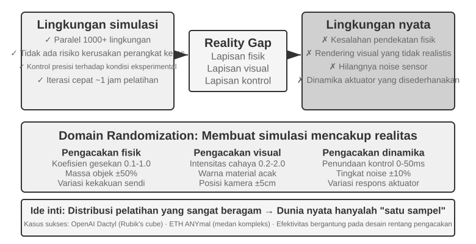
Pendekatan ini telah menghasilkan beberapa keberhasilan yang menonjol. Proyek Dactyl milik OpenAI mencapai reorientasi kubus di dalam tangan, dan pekerjaan selanjutnya menggunakan Automatic Domain Randomization (ADR) untuk memecahkan Kubus Rubik dengan satu tangan. Quadruped ANYmal dari ETH Zurich telah menunjukkan penggerak (locomotion) yang kuat di atas medan luar ruangan yang sulit seperti salju dan kerikil.
Apa yang ditambahkan bab ini adalah dua langkah rekayasa yang tidak dapat Anda lewati saat membawa Domain Randomization ke robot nyata. Yang pertama adalah mengkalibrasi rentang pengacakan (calibrating the randomization range): rentangnya tidak dapat ditetapkan berdasarkan firasat. Terlalu sempit, dan ia melewatkan variasi dunia nyata; terlalu lebar, dan pelatihan menjadi lebih sulit serta menghasilkan kebijakan suboptimal yang "bisa menangani segalanya, tapi tidak menguasai apa pun." Praktiknya, distribusi parameter kunci (koefisien gesekan, penundaan respons motor) terlebih dahulu diukur dan dikalibrasi dari data dunia nyata dan disampel di dalam rentang tersebut; jika performa kebijakan yang dilatih dalam simulasi turun secara mencolok pada robot nyata, rentangnya diperlebar selangkah demi selangkah hingga kesenjangan sim-to-real konvergen ke sesuatu yang dapat diterima. Yang kedua adalah penyelarasan visual (visual alignment): secara presisi mengkalibrasi pose kamera antara simulasi dan realitas (environment alignment), dan secara acak menyambungkan (splicing) gambar latar belakang dunia nyata ke dalam render simulasi (greenscreen background replacement) sehingga simulasi terlihat semirip mungkin dengan apa yang dilihat robot nyata. Eksperimen 9-10 mendemonstrasikan kedua langkah tersebut.
Eksperimen 9-10 ★★★: Zero-Shot RGB Sim2Real Robotic Grasping
Menggunakan simulator LeRobot + ManiSkill, latih hanya dengan gambar kamera RGB (tanpa bergantung pada sensor kedalaman (depth sensors) atau sensor kekuatan (force sensors)), lalu terapkan secara Zero-Shot (tanpa tuning tambahan apa pun) langsung ke lengan robot nyata SO100. Proses ini memiliki lima langkah:
- Penyelarasan Lingkungan (Environment Alignment): Sesuaikan posisi kamera dalam simulasi dan lingkungan nyata, memverifikasi melalui visual overlay bahwa gambar dari kedua sisi sejajar.
- Penggantian Latar Belakang (Greenscreen Background Replacement): Potong secara acak gambar latar belakang yang diambil dari lingkungan nyata dan tumpangkan (overlay) pada rendering simulasi, membuat latar belakang simulasi menjadi lebih dekat ke realitas.
- Domain Randomization: Acak parameter seperti warna robot, tekstur objek, kondisi pencahayaan, dan bidang pandang (field of view) kamera.
Pelatihan RL (RL Training): Latih menggunakan algoritma PPO di lingkungan simulasi paralel secara masif (massively parallel) hingga tingkat keberhasilan dalam simulasi melebihi 90%.
Real-World Deployment: Berhasil menyelesaikan tugas menggenggam pada robot nyata secara zero-shot.
Faktor kunci keberhasilan: penyelarasan lingkungan yang presisi, visual domain randomization, dan physical parameter randomization; ketiganya sangat penting. Keterbatasan: Ketika bentuk, ukuran, atau material dari objek nyata berada di luar distribusi pelatihan, tingkat keberhasilannya menurun secara signifikan.11
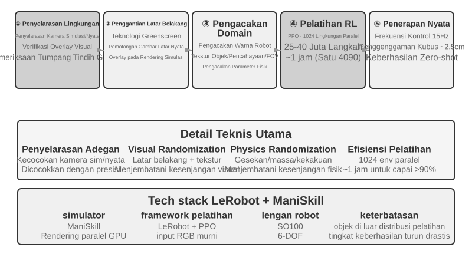
Ringkasan Bab¶
Secara kasat mata, ketiga skenario tersebut mungkin terlihat sangat berbeda, namun tantangan kembar berupa latensi dan multimodalitas membayangi semuanya. Voice Agents telah berevolusi dari serial pipelines menjadi sistem end-to-end dan full-duplex, serta dari fast dan slow thinking yang terpisah menjadi thinking while speaking. Computer Use kini mendekati akurasi manusia pada benchmark seperti OSWorld, namun membutuhkan langkah yang jauh lebih banyak daripada manusia, dan setiap langkah memakan waktu lebih lama seiring berjalannya tugas—sebuah celah efisiensi yang belum memiliki solusi sistematis. Untuk robot yang melakukan tugas manipulasi dengan panduan visual, hambatannya telah bergeser dari perangkat keras ke kemampuan lapisan kontrol VLA untuk melakukan generalisasi di berbagai tugas (tactile sensing dan dexterous hands tetap menjadi keterbatasan perangkat keras yang belum terselesaikan). Bab berikutnya akan membahas kolaborasi di antara beberapa Agents—sebuah tantangan dengan dimensi yang berbeda.
Pertanyaan Pemikiran¶
- ★★ Model end-to-end untuk Voice Agents menggabungkan ASR-LLM-TTS menjadi sebuah model tunggal, mengurangi latensi namun mengorbankan modularitas. Jika model end-to-end membuat kesalahan pada tahap tertentu (misalnya, speech recognition), melakukan debugging dan memperbaikinya jauh lebih sulit daripada dalam sebuah serial pipeline. Bagaimana Anda akan mendesain sebuah sistem observabilitas (observability system) untuk sebuah Voice Agent end-to-end?
- ★ Step-Audio R1 mencapai "thinking while speaking" melalui arsitektur dual-brain MPS. Akan tetapi, manusia, ketika "berpikir sambil berbicara", sering kali mengatakan sesuatu sebelum mereka memikirkannya secara utuh, mengoreksi diri sendiri (self-correct), atau menggunakan kata-kata pengisi (filler words). Haruskah kemampuan "thinking while speaking" pada Agent meniru karakteristik manusia ini?
- ★★ SoM (Set-of-Mark) dan varian terstrukturnya (DOM element indexing) mengubah lokalisasi visual Computer Use dari prediksi koordinat yang bersifat open-ended menjadi pemilihan ID closed-set, namun semuanya membutuhkan pendeteksian dan penganotasian elemen UI terlebih dahulu—baik melalui segmentation model ataupun DOM. Jika antarmuka tersebut mengandung kontrol non-standar atau elemen yang berubah secara dinamis, anotasinya mungkin menjadi tidak lengkap atau tidak akurat. Dalam kasus seperti ini, haruskah kita kembali menggunakan coordinate prediction?
- ★★ Platform robot seharga ribuan dolar seperti XLeRobot membuat pengumpulan data teleoperation menjadi murah. Namun, kualitas dari data teleoperation sangat bergantung pada keterampilan operatornya. Bagaimana data berkualitas rendah dari operator yang tidak terampil akan memengaruhi pelatihan model VLA? Bagaimana data berkualitas rendah dapat difilter secara otomatis selama fase pengumpulan data?
- ★★★ Bab ini mencakup tiga modalitas interaksi: voice, Computer Use, dan robotika. Tren umum di seluruh modalitas ini adalah evolusi dari serial pipelines menuju model end-to-end. Jika tren ini berlanjut, akan seperti apa bentuk dari Agent interaction layer dalam lima tahun ke depan?
- ★★★ Computer Use saat ini beroperasi dalam sebuah loop "screenshot → action → screenshot" yang diskrit, di mana setiap observasi merupakan bingkai statis (static frame). Namun persepsi manusia terhadap sebuah layar bersifat kontinu—kita melihat pemutaran animasi, mengamati kemajuan pemuatan (loading progress), dan memahami konten video. Ini berarti Computer Use saat ini tidak dapat menangani tugas-tugas yang membutuhkan pemahaman visual temporal (temporal visual understanding). Bagaimana Anda akan mendesain ulang perception layer untuk mendukung pemahaman aliran visual kontinu (continuous visual streams)?
- ★★ DOM/Accessibility Tree element indexing bekerja dengan baik pada aplikasi web standar, tetapi semakin banyak antarmuka perangkat lunak (rendering Canvas/WebGL, kontrol cross-platform yang digambar secara kustom) tidak menyediakan informasi terstruktur yang dapat diakses, hanya mengandalkan anotasi visual atau coordinate prediction. Apakah menurut Anda Computer Use harus bertaruh pada pendekatan visual murni, atau mempertahankan jalur terstruktur dan visual? Apa biaya dan manfaat dari mempertahankan kedua jalur tersebut?
- ★★ Model VLA menggunakan action chunking—seperti yang disebutkan di dalam teks, konfigurasi tipikal π₀ menghasilkan 25-50 future actions pada 50Hz—untuk menyembunyikan inference latency di dalam execution time. Akan tetapi, jika lingkungan berubah secara tiba-tiba selama eksekusi (misalnya, sebuah objek dipindahkan), urutan tindakan (action sequence) yang dihasilkan sebelumnya menjadi tidak valid. Bagaimana kita dapat menyeimbangkan keuntungan efisiensi dari action chunking dengan kebutuhan akan responsivitas terhadap perubahan lingkungan?
- ★★★ Ketiga skenario dalam bab ini (voice, Computer Use, robotika) menghadapi masalah latensi pada loop "perceive-think-act" dan sedang berevolusi menuju fast and slow thinking yang diparalelkan. Pada voice, ini bermanifestasi sebagai "mengoreksi setelah salah bicara"; pada Computer Use, sebagai "mengklik dulu, baru melihat"; pada robotika, sebagai "mengambil satu langkah, lalu melihat." Bagaimana kita dapat memastikan bahwa tindakan-tindakan yang didasarkan pada fast thinking ini tidak mengarah pada konsekuensi yang tidak dapat diubah (irreversible consequences)?
-
OpenAI. Introducing GPT-Live. 2026-07-08. https://openai.com/index/introducing-gpt-live/. Klasifikasi tiga bagian dari "Cascaded / Turn-based / Full-Duplex" di bagian ini berasal dari ringkasan artikel ini tentang tiga generasi evolusi ChatGPT Voice; "Omnimodal End-to-End (Omni)" dalam teks sesuai dengan kategori "model suara berbasis giliran" (turn-based voice models) mereka. ↩
-
Diagnosis tentang penanaman turn judgment ke dalam recognizer dan masalah label berbasis hindsight dapat ditemukan di Bojie Li dan Noah Shi. The Trade-off Was in the Labels: Causal Supervision for Turn-Aware Streaming ASR. 2026 (akan terbit). ↩
-
Untuk pengukuran lintas modal yang lengkap tentang kapan keuntungan akurasi dari cascade dan end-to-end berbalik, serta bagaimana memprediksi arahnya berdasarkan sifat tugas (apakah representasi perantara dapat cukup membawa informasi terkait tugas), lihat Bojie Li dan Noah Shi. The Cascade Gap: When and Why Self-Cascades Help Multimodal Agents. 2026 (akan terbit). ↩
-
Thinking Machines Lab, "Interaction Models: A Scalable Approach to Human-AI Collaboration," 2026-05. https://thinkingmachines.ai/blog/interaction-models/ ↩
-
Analisis lengkap tentang pelatihan hanya jembatan latent-space antara dua model yang dibekukan dan "kapan layak mengundang seorang ahli strategi yang lambat" dapat ditemukan dalam Bojie Li dan Noah Shi. The Latent Bridge: A Continuous Slow-Fast Channel for Real-Time Game Agents. arXiv:2606.24470, 2026. ↩↩
-
Untuk mekanisme lengkap dan ablasi per model dari ketiga komponen—gated keyframes, on-demand transcription, dan narrating frames into persistent text—lihat Bojie Li dan Noah Shi. Agent-Computer Observation Interfaces Enable Dynamic Computer Use. arXiv:2606.29472, 2026. ↩
-
Desain lengkap dari decoupling fast-slow untuk speech-operation dan "plain text contract" dapat ditemukan di Bojie Li dan Noah Shi. Talking While Acting: Real-Time Voice for Slow Computer-Use Agents. 2026 (mendatang). ↩
-
XLeRobot, "Teleop Documentation." https://xlerobot.readthedocs.io/en/latest/software/getting_started/XLeRobot_teleop.html ↩
-
Google DeepMind, "Gemini Robotics-ER 1.5." https://deepmind.google/models/gemini-robotics/gemini-robotics-er/ ↩
-
XLeRobot, "LLM Agent Control." https://xlerobot.readthedocs.io/en/latest/software/getting_started/LLM_agent.html ↩
-
LeRobot, "Sim2Real Tutorial". https://github.com/StoneT2000/lerobot-sim2real/blob/main/docs/zero_shot_rgb_sim2real.md ↩